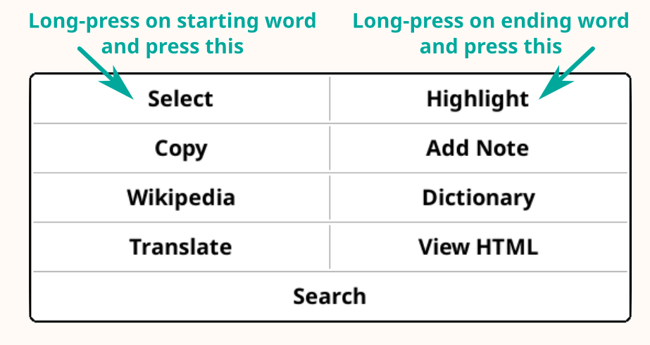

Тренутно читате српску верзију KOReader корисничког упутства. Волонтери преводе ово упутство на остале језике. У току је рад на многим преводима, што можете да видитеу општем статусу превода испод. Али из разлога употребљивости, линк постављамо само на језике који су преведени више од 50%.
Преведено више од 80%
- üá®üá≥ кинески (–ø–æ—ò–µ–¥–Ω–æ—Å—Ç–∞–≤—ô–µ–Ω–æ —Ö–∞–Ω –ø–∏—Å–º–æ)
- üá∞üá∑ –∫–æ—Ä–µ—ò—Å–∫–∏
- üá∑üá∏ —Å—Ä–ø—Å–∫–∏
- üá∏üá∞ —Å–ª–æ–≤–∞—á–∫–∏
- üáÆüá≥ —Ç–∞–º–∏–ª
- üá∫üᶠ—É–∫—Ä–∞—ò–∏–Ω—Å–∫–∏
Преведено 50% до 80%
Ако желите да видите све језике на које се тренутно преводи, и да дате свој допринос у раду на превођењу корисничког упутства, молимо вас да посетите Weblate страницу превода нашег пројекта.
Општи статус превода корисничког упутства

Ово упутство је првенствено дизајнирано за екране у боји. Ако га користите први пут, снажно вам препоручујемо да га читате на компјутеру, таблету или мобилном. Биће вам лакше да научите како да користите KOReader ако истицања елемената корисничког интерфејса видите у боји. Наравно, такође можете да читате и на свом e-ink уређају, али искуство неће бити оптимално.
Да бисте пронашли одређену тему или кључну реч, можете да употребите функцију претраге свог интернет прегледача (углавном Ctrl + F). Ако имате сугестију или питање у вези са овим корисничким упутством, можете да пишете на овај GitHub низ дискусије.
Делови текста овог упутства су обојени сагласно са категоријама:
ДЕЛОВИ ПРОГРАМА KOREADER (ПЛАВО) |
Статусна линија, Мапа књиге… |
ПУТАЊЕ МЕНИЈА (ЗЕЛЕНО) |
ГОРЊИ МЕНИ /  / Стил истицања / Стил истицања |
СПОЉНЕ АПЛИАКЦИЈЕ (ЉУБИЧАСТО) |
Calibre, Readwise, KoHighlights… |
Кроз упутство користимо и различита поља којима вас информишемо или упозоравамо:
KOReader развијају и подржавају волонтери из целог света. И ви можете да будете део овог пројекта:
- Исправљањем багова и имплементирањем нових функција
- Превођењем програма на свој језик или унапређивањем постојеђег превода
- помагањем другима својим знањем на форумима или на GitHub проблемима и дискусијама
Погледајте одељак Обратите нам се за линкове.
Последње ажурирање упутства: 25.03.2025.
- ШТА МОЖЕТЕ ДА УРАДИТЕ ПРОГРАМОМ KOREADER ?
- ИНФОРМАЦИЈЕ О ОСНОВНОЈ УПОТРЕБИ
- УЧЕЊЕ КОРИСНИЧКОГ ИНТЕРФЕЈСА
- КРЕТАЊЕ КРОЗ КЊИГУ
- ПРИЛАГОЂАВАЊЕ ИЗГЛЕДА ТЕКСТА
Упркос свом минималистичком изгледу, KOReader је веома моћна и прилагодљива апликација. Овај одељак личи на садржај који је оријентисан на практичну употребу. Тако да ако сте нови корисник, ово је право место за почетак. Овде ћете да прочитате шта све KOReader може и научићете како да то урадите следећи ове  линкове за скок на поменуте одељке.
- Режим USB масовно складиште на уређајима који то подржавају 
- Складиште на облаку (Dropbox/FTP/Webdav) са одговарајућим налозима 
- KOReader може да служи као SSH сервер, па можете да употребите SFTP апликацију или менаџер фајлова за директни пренос фајлова 
- Са Calibre додатком можете да из Calibre библиотеке шаљете књиге директно на KOReader уређаје преко бежичне мреже 
- Додатком за преузимање вести можете на свој уређај да преузимате RSS и Atom ставке вести као HTML фајлове 
- Wallabag додатком можете да преузимате чланке са свог Wallabag налога (сервис читај-касније заснован на серверу као што је Pocket) 
- Промените фонтове (укључујући сопствене), величину фонта, контраст, тежину, кернинг, размак између речи, размак између слова у речи, поравнање текста, проред, распоред колона, маргине… 
- Користите испоручена моћна дотеривања стила или да напишете сопствена којима прецизно мењате начин на који се исцртавају ваше књиге 
- Ручно или аутоматски инвертујете екранске боје за ноћни режим 
- Аутоматски подесите топлину боје свог предњег осветљења 
- Истичите текст различитим стиловима и бојама, постављајте маркере 
- Режим двоструког тапа за академска/дужа истицања 
- Додајте белешке употребом прилагодљиве тастатуре која садржи модификаторе дијакритика 
- Правите слике екрана 
- Пратите статистику читања која укључује погледе напредак читања, временски опсег и календар
- Извозите своје белешке и истицања на свој уређај као текст, markdown, HTML, JSON или Kindle clippings формат 
- Синхронизујте са сервисима на мрежи као што су Joplin, Readwise, Memos, Flomo и XMNote 
- Моћни Прегледач фајлова где можете да копирате, премештате креирате, бришете и мењате име фајловима и фолдерима и вршите пакетне операције 
- Приказујете своју библиотеку онако као желите, у многим детаљним и мозаик погледима 
- Додајете књиге у Омиљено да бисте им брзо приступили, или креирате сопствене Колекције са сортирањем и филтрирањем 
- Виџет за прелетање којим се брзо скаче по страницама, поглављима, маркерима 
- Јединствена Мапа књиге која приказује поглед на књигу из птичије перспективе, укључујући све ваше напомене и истицања 
- Прегледач страница којим се кроз странице крећете као по кадровима на филмској траци 
- Прегледач маркера којим се једноставно крећете по истицањима и белешкама 
- Аутоматски или ручно креирајте алтернативне садржаје ако вам се не свиђају они који се налазе у књизи 
- Сакријте и искључите одређене делове књиге као што су Додатак, Индекс, Референце итд. и имаћете прецизније бројање страница 
- Моћан систем гестикулација са 200+ акција вам омогућава да тапом или превлачењем контролишете сваки детаљ програма KOReader 
- Ако имате тастатуру (интерну, жичану или bluetooth), овим акцијама можете да доделите и пречице на тастатури 
- Или креирајте мени са својим омиљеним акцијама помоћу Брзог менија и приступите им тапом или превлачењем 
- Креирајте Профиле којима контролишете сваки детаљ програма KOReader и аутоматизујете акције 
- Претражујте документ одабирањем или уносом текста (укључујући регуларне изразе)
- Претражујте по маркерима, истицањима и напоменама
- Дугим тапом потражите текст у Википедији или у инсталираним речницима и преведите га
- Преводите целу страницу одједном између више од 130 језика
- Помоћу нашег моћног система додатака, можете чак и да дискутујете о тексту са ChatGPT (након инсталирања додатка) 
- KOReader може сам себе да ажурира 
- Затамните или искључите екранско светло након постављеног интервала
- Поставите интервале освежавања странице за различите услове читања 
- Поставите сопствени чувар екрана користећи разне опције као што су случајне слике, омот књиге, читање, напредак итд.
- Set battery charge limit alarms to prevent deep discharge/over charge 
- Set a memory usage alert (useful for devices for smaller memory) and optionally restart KOReader upon reaching this limit 
- Опсеците маргине аутоматски или ручно
- Пресложите документе да издвојите текст и да лакше читате на малом екрану
- Apply OCR to documents without text layers, like scanned old books 
- Different zoom types and page flow directions to read multi-column documents like scientific articles easily 
- Auto straighten tilted documents, like scanned old books 
- Save your highlights directly into PDFs which allows you to see them without KOReader 
- Special Panel zoom feature for reading mangas 
- Adjustable screen refresh settings for perfectly balancing between ghosting and speed 
- Add your own CSS style tweaks for books 
- User patches system which allows you to change the core behaviors of KOReader 
- Create a QR code from your clipboard to share text and links to other devices
- View HTML source of an EPUB document
- Креирајте и уређујте текст фајлове на уређају
- Отворите емулатор терминала и извршавајте команде на уређају
- Погледајте статистике коришћења CPU, меморије и батерије
KOReader supports PDF, EPUB, DJVU, MOBI, CBZ, CBT, DOCX, RTF, HTML, TXT, XPS, FB2, PDB, CHM and MD files. It can also open ZIP archives and show image files.
Постоји много начина да пренесете документе на уређај. Имајте на уму да ћете морати поново да покренете програм KOReader како би индексирао пренесене документе (или да освежите директоријум ако имате Pocketbook/Android).
Уз пренос фајлова на исти начин на који то радите апликацијом за читање уграђеном у читач, у зависности од уређаја, постоје и друге опције:
- Режим USB масовног складишта унутар програма KOReader: овај режим је доступан за KOBO и неке CERVANTES уређаје.
- Cloud storage (Dropbox/FTP/Webdav): To use this function you have to add accounts for a cloud storage server via menu shown below. Process is explained via info buttons in the menu while adding accounts:
TOP MENU (in File Browser) /
 / Cloud storage
/ Cloud storage - SSH/SFTP access: KOReader can act like an SSH server, which you can access from a computer to transfer files (available on Kobo, Kindle, Cervantes). You can use an SFTP application (like Filezilla) or access via your file manager if your operating system supports. Check our wiki for how-to and also see the warning box below.
- Calibre transfer: With the Calibre plugin you can send documents from your Calibre Library directly to your KOReader devices via a wifi connection. Check our wiki for how-to.
- News downloader: With this plugin you can download RSS and Atom news entries as HTML files. Check wiki for how-to.
- Wallabag: With this plugin you can retrieve articles from Wallabag, a server based read-it-later service like Pocket. Check wiki page for more info.
WARNING Be careful if you decide to use the SSH feature without a password, because this allows open access to your device. But if you are using a local wifi and turn on your device wifi for a short time, this risk is negligible.
Following methods are available for accessing your books:
- File Browser - Dedicated section is here: File Browser usage
- Омиљено - листа на коју можете да додате књиге дугим притиском на њих у Прегледачу фајлова
- Историја - листа књига које сте отворили
- Collections - Personalized book lists you created. Dedicated section is here: Collections
Начин на који се приказују ови екрани можете да промените из:
 / Display mode
/ Display modeАко желите да промените број ставки које се виде на овим екранима, погледајте овде:
/ Settings / Mosaic and detailed list settingsЗа сваки од ових дијалога можете да подесите гестикулације. На пример, док читате књигу, Историји или Омиљеним можете да приступите гестикулацијом, па да отворите другу књигу без потребе да идете кроз Прегледач фајлова.
Из горњег левог дугмета хамбургер менија можете да претражите књигу у екрану Историја по имену фајла или метаподацима књиге.
Такође можете подесити да KOReader приликом покретања уместо екрана Прегледач фајлова отвори екран Омиљено или Историја преко:
/ Start with
In the image above, you can see the positions of the default tap zones of KOReader. To show the top menu or bottom menu you can tap the indicated zones. You can also swipe down the upper zone to show the top menu. On non-touch devices like Kindle 4 you can open the bottom menu by pressing the button that corresponds to the ENTER/OK action.
If you want top open both menus at the same time, you can set top menu zone to open both the top and bottom menu at the same time via this menu:
 / Taps and Gestures / Activate Menu
/ Taps and Gestures / Activate Menu
Corner tap zones can be used for many different type of gestures including TAP, DOUBLE TAP, TWO FINGER TAP and TAP and HOLD.
Зоне ПРЕТХОДНА СТРАНИЦА и НАРЕДНА СТРАНИЦА такође истовремено могу да се користе за ДВОСТРУКИ ТАП гестикулације.
Status bar zone can be tapped to cycle between the status bar items if only one item is visible. If all items are visible, tapping will show and hide the status bar.
- Changing the font*:TOP MENU / / Font
- Повећате величину фонтаBOTTOM MENU /

- Подебљате фонтBOTTOM MENU /

- Инвертујете боје на екрану (бело на црном)TOP MENU / / Night Mode
You can also change other formatting options from the BOTTOM MENU to fine tune the appearance of your text. These are just quick tips to get you started of course. We have a full section dedicated to CUSTOMIZING TEXT APPEARANCE
Осветљење екрана можете да контролишете из овог менија. Ако имате топло осветљење (обичне беле LED диоде + наранџасте), можете одвојено да их контролишете из овог дијалога. За овај дијалог можете да дефинишете и гестикулацију:
/ FrontlightИз следећег менија, као чувар екрана можете да изаберете омот књиге или произвољну слику:
/ Screen / ScreensaverКао чувар екрана можете да користите JPG/PNG фајлове (најбоље изгледају исправно дитероване слике у тоновима сиве). Пренесите фајлове са компјутера у било који фолдер на уређају. Па из следећег менија изаберите тај фолдер као фолдер чувара екрана:
/ Screen / Screensaver / SettingsPlease refer to this Mobileread forum post for advanced information about preparing screensaver images.
If you are looking for information about keyboard shortcuts, click here to go that section. This heading only explains the keyboard usage.
- Тап ван поља за унос затвара тастатуру, тап у поље за унос поново приказује тастатуру
- Превуците навише тастере да унесете то велико слово (или мало ако се већ налазите у шифт режиму)
- Можете да измените изглед тастатуре:
TOP MENU / / Device / Keyboard / Keyboard settings
- Можете да изаберете више од једног распореда:
TOP MENU / / Device / Keyboard / Keyboard layout
- You can change between your selected layouts by tapping the
 icon on the keyboard
icon on the keyboard
Koreader тастатура омогућава унос додатних карактера када тапнете и задржите тастер. Испод су приказани додатни карактери који се најчешће користе. Да бисте добили суседне карактере можете да тапнете и задржите такстер у сивом пољу:

Уз искачући прозор који се добија дугим притиском, ове додатне карактере можете да унесете и превлачењем по тастеру. У примеру испод, можете да превучете навише тастер a када желите да унесете велико А, или да превучете у било ком другом смеру да унесете приказане карактере. Запазите да доњи пример приказује комплетан искачући прозор само да би било јасније објашњење. Нема потребе да отварате овај прозор, можете директно да превлачите по тастерима. Једном када се навикнете на локације додатних карактера, на овај начин ћете бити у стању да их уносите много брже.

Ако ова функција прави сметње у начину на који користите програм, можете да је искључите тако што уклоните штиклирање са:
/ Device / Keyboard / Swipe to input additional charactersAdditionally there are some shortcuts for easier text manipulation. You can tap and hold these keys for extra actions:
- Лева стрелица - помера курсор на почетак линије
- Десна стрелица - помера курсора на крај линије
Also backspace key behaves different when you make swipe gestures on it:
- Tap: Delete a character
- Long-press: Delete the whole line
- Swipe left: Delete part of the word left of the cursor
- Swipe up: Delete the whole word
For more information, you can check the related wiki page.
KOReader also integrates the Chinese stroke keyboard for inputting simplified and traditional Chinese characters. You can find more info about it in our wiki.
This plugin allows you to adjust frontlight warmth in devices with natural (yellow/orange) light and set night mode (inverted screen colors – white text on black background) automatically according to a schedule. It can control them both or you can choose only warmth control or only night mode control mode, so you can adjust the other one manually.
This plugin comes enabled as default when you install KOReader. If for some reason it is not in the menu, you can enable it here:
/ More tools / Auto Warmth and Night ModeТоплину предњег светла екрана можете аутоматски да подесите на два различита начина:
Fixed schedule: In this mode your frontlight warmth changes according to the daily schedule you entered. This mode is static, it doesn’t account for daylight length. The schedule stays the same all around the year.
Sun's position: This option calculates Sun’s position in your location according to coordinates and altitude information you entered. Frontlight warmth is adjusted gradually according to this calculated Sun position data. This mode is dynamic. As the length of daylight changes around the year, plugin adjusts the schedule accordingly.
Најпре погледајте следећу слику да се упознате са појмовима који се користе у додатку:

- Go to the plugin menu: TOP MENU / / Screen / Auto Warmth and Night Mode
- Tap Activate menu item and then tap According to the fixed schedule
- Go back to previous menu and tap Fixed schedule settings menu item
- Set your warmth transition schedule by setting times for various items here. Refer to the image above for an explanation of items.
- Go to the plugin menu:
TOP MENU / / Screen / Auto Warmth and Night Mode
- Tap Activate menu item and then tap According to the sun's position
- Go back to previous menu and tap Location settings menu item. Set your coordinates (necessary) and altitude (optional) correctly and give a name to your location.
- Go back to previous menu and tap Warmth and night mode settings menu item
- Set your warmth transition schedule by setting times for various items here. Refer to the image above for an explanation of items.
You can see your current schedule via Currently active parameters menu option.

Док постављате проценат топлог светла за различите интервале, за тај интервал такође можете да укључите и Ноћни режим, чиме се инвертују боје на екрану када почне тај интервал. Ако је минимално предње светло још увек превише јако, или ако вам више одговара тамна позадина странице, активирајте ову функцију. Да бисте то урадили, тапните на поље за штиклирање Ноћни режим и тапните Постави.
Када то урадите, у менију ће се поред овог интервала појавити икона месеца. Ако желите да искључите ноћни режим, једноставно уклоните ознаку штиклирања Ноћни режим у том интервалу.

Ова функција укључује предње светло приликом заласка сунца и искључује га приликом изласка сунца сагласно са Тренутно активним параметрима у додатку. Ово можете да преиначите тако што ручно укључите/искључите предње светло. Приликом наредног изласка/заласка сунца, AutoWarmth ће поново изменити стање ако је то потребно. Можете да га активирате тако што у менију овог додатка изаберете ставку ПРедње светло је искључено током дана.
Ако желите да се уместо постепене измене топлина мења брзо:
- Поставите режим на Фиксни распоред следећи инструкције изнад
- Па поставите подешавања слично као на слици испод:

Као што можете видети у горњим подешавањима, разлика у времену преласка између дана и ноћи је само један минут. Тако да топлина екрана иде од 0 до 100 (или обратно) за време од само једног минута. Ово време раздвајања преласка можете да повећате и тако продужите транзицију.
KOReader поседује једноставан, углавном црно-бели коринички интерфејс јер градијенти и различите нијансе сиве могу да проузрокују бљескање и појаву духова на e-ink екранима, а то квари уживање у читању.
KOReader has 2 main interfaces: reading screen and file browser. We will explain reading screen here. File browser is explained under this section of the guide.
READING SCREEN has two menus:
- TOP MENU includes menu items related to the general usage of KOReader. You will access your books, KOReader preferences, plugins etc. here.
- BOTTOM MENU is focused on options for document formatting like font weight/size, line spacing etc. While adjusting your text appearance, you will mostly interact with the BOTTOM MENU.


Image above shows the elements you can see on your reader screen when reading a book:
- Indicator icons: These icons inform you about certain ongoing processes and states. You will see them at the top left corner of your screen during certain operations. Normally they are smaller but here we show them bigger for clarity. Next heading explains these indicator icons in detail: Indicator icons
- Status bar:This is a highly configurable area where you can see various information about your book and KOReader. Click here to go to the section: Click here for details: Status bar
- Alternate Status bar: In addition to the default Status bar, we have an Alt status bar which appears at the top of the page if you enable it. Click here for details: Status bar
- Reference page numbers: If the publisher of your book included the page numbers from the paper printed version of the book, you will see them like this. Click here for more info: Page numbering and reference page numbers
- Highlight types: You can see the different highlight types here. Also you can make colored highlights if your device has a suitable screen. Click here to go to the section: Bookmarks, Highlighting and Notes
- Note marker: Note marker icon shows up when you add a note to a highlight. We have different types of note markers. Click here for more info: Bookmarks, Highlighting and Notes
KOReader has some indicators to inform you about certain ongoing processes and states as you can see in the image above. You will see them at the top left corner of your screen during certain operations.
   
|
Partial rendering icons This group of icons belong to the partial rendering procedure and probably you will see these icons more frequently than the others. You see these icons when you change the settings on the bottom menu. This feature, allows you to preview the text appearance adjustments much quicker by only rendering the current chapter instead of the whole book. Also rotating your screen orientation is now much faster thanks to this feature. This feature is ENABLED by default. If necessary, it can be disabled per book (with a tap), or globally (with a long-tap) on: TOP MENU /
/ Document / Enable partial renderingsAfter confirming your changes whole book has to be re-rendered so this is a multi-step procedure. These icons shows the stage of rendering as explained below: |
|
In this stage, document is partially rendered. Page count, footer info and many things are innacurate. You can see how the new settings look and adjust further. You can also turn pages, jump links in this state. |
|
Потпуно исцртавање се дешава у позадини. Још увек можете да окрећете странице, следите линкове, мењате подешавања. |
|
Комплетно исцртавање је завршено, али још увек није примењено јер KOReader чека да не радите ништа како би могао поново да учита остата ккњиге (не радите ништа=не дирате уређај). Још увек можете да окрећете странице, следите линкове, мењате подешавања. |
|
|
Нисте додиривали уређај неко време, тако да KOReader сада поново учитава комплетан документ. У овом кораку KOReader је блокиран да би се спречила интеракција. |
 |
Highlighting icon This icon shows up when you are in the Select and highlight mode. KOReader has an additional highlight mode which allows you to start a highlight and turn pages to make long highlights which can span multiple pages. You can read about this in the BOOKMARKS, HIGHLIGHTING AND NOTES section of this guide. When you start a highlight in this mode, this icon is shown at the corner to remind you that you are still in the highlighting mode. It disappears when you finish your highlight by selecting the end of the passage or when you cancel the highlight (by tapping again on the beginning of your highlight or on this highlighting icon). |
 |
Pokemon ball icon This icon shows up when you press for a long time on a word (intentionally or accidentally). KOReader has a normal long press menu. And an additional very long press menu when you hold your finger longer than 3 seconds. This icon means that you activated this very long press menu. |
 |
Flip mode icon This icon shows up when you tap the top left corner if:
This mode temporarily displays the full page without cropping, scaled to fit your screen. You can turn the pages in this mode. To exit this mode, tap on this icon. |
Document types like epub, mobi, html naturally don't have fixed page numbers because they are reflowable documents. Which means, these documents can be adjusted according to the screen size and orientation of the device (unlike pdfs or djvu files for example, which have a fixed page size).
If you increase the font size of a reflowable document, your page count will increase too, because now less text will fit on a single page. This sometimes causes a problem because a highlight which you made on page 38 might be on page 42 after the font adjustment.
KOReader supports Reference page numbers feature which allows publishers to embed page numbers from printed books directly to the e-book version. When you enable this feature, KOReader doesn't calculate the page numbers itself. Instead, it shows you the embedded page numbers from the publisher. This means, the page number you see in your Status bar matches the print version of the book.
Benefits of reference page numbers:
- Reference page numbers enable accurate citations by matching the page numbers found in the printed versions.
- Reference page numbers can aid in navigation, especially for readers who are familiar with the print version of a book. It can help you find specific passages or quotes more easily in the digital version.
- Since digital books can be read on various devices and platforms, each with its own font size and display settings, shown page numbers can vary significantly. Reference page numbers provide a consistent point of reference when reading the same book on different devices like e-reader and phone at the same time.
You can enable this feature from:
 / Reference pages / Use reference page numbers
/ Reference pages / Use reference page numbersIf you also check the Show reference page labels in margin option from the same menu, this page numbers will be shown next to the text in a small font.
Please note that this menu appears only if there are embedded Reference page numbers in your book.
KOReader have two status bars, a Bottom status bar which is enabled by default. And we have an Alt status bar which appears at the top of the page if you enable it. This Alt status bar is available only in reflowable documents (epub, html, docx, rtf, txt…).
Bottom status bar is the newer one which is actively maintained. Alt status bar is a remnant from earlier versions of KOReader so we are not adding new features to it. But you can still enable this Alt status bar if you find it useful. You can enable it from:
/ Alt Status BarYou can configure the Alt status bar from this menu:
/ Status Bar / Alt status barInstructions in the rest of this section are for the Bottom status bar.
You can configure the bottom status bar from this menu. Feel free to explore the SETTINGS sub-menu to customize your status bar as you like.
/ Status BarThere are many items you can show on the status bar. But by default, only one is shown at a time and you have to tap on the status bar to cycle between them. If you want to show all items at once, enable it from here:
/ Status Bar / Configure items / Show all selected items at onceIf you enabled the option above, you can't hide the status bar by tapping on it. If you want to hide it, you should assign a gesture here for toggling the status bar:
Sorting the status bar items:
/ Status Bar / Configure items / Arrange items in status barThere is a special status bar item named Custom text. This item can show your chosen text in the status bar. You can also use this feature to create a separator between the status bar items as you can see in the example below:

- Најпре је укључите кратким притиском на следеће
TOP MENU / / Status Bar / Custom text: ‘KOReader’
- Затим поново извршите дуги притисак на њу да се отворе подешавања. Унесите карактер „размак” у прво поље, па затим унесите број понављања у друго поље, чиме се одређује ширина граничника.
You can choose another character as a separator. You can also move this item like other status bar items to change its order to adjust your groups.
Progress bar in the status bar normally shows your progress for the whole book. But it can also show your progress for the current chapter instead. This can be useful for example, if a book has lots of short chapters. In this case it might be hard to see your progress in the current chapter so chapter status bar can be more informative here. You can enable the feature from this menu:
/ Status Bar / Progress Bar / Show chapter-progress bar insteadAlso you can assign a gesture to switch between normal and chapter progress bars. You can find this action under:
Here we will only give an overview of the items in the top menu structure to make you familiar with the menu. Detailed information is available under the related sections of this guide.

- NAVIGATION: This menu contains items that allows you to navigate the book you are currently reading. Table of contents, bookmarks, book map...
- TYPESETTING: This menu contains items that allows you to change the appearance of your book. Font settings, style tweaks...
- SETTINGS: This menu contains settings for KOReader and your device. E-ink, light, gesture settings...
- TOOLS: This menu contains plugins that can expand the functionality of KOReader.
 SEARCH: This menu contains items related to search and lookup. Text search, dictionary, translation, Wikipedia...
SEARCH: This menu contains items related to search and lookup. Text search, dictionary, translation, Wikipedia...- FILE BROWSER: This button opens the file browser which is the interface for managing your library.
 MAIN: This menu contains tools for accessing your books like history, favorites, collections. Also book information, update and exit items are under this menu.
MAIN: This menu contains tools for accessing your books like history, favorites, collections. Also book information, update and exit items are under this menu.

View mode: If you change to continuous mode you can scroll the document like a web page. This mode is more suitable for non e-ink screen types (LCD, OLED). In continuous mode you lose top and bottom margins so text may be cut on the first and last line of screen. To solve this problem you can enable Page overlap:
/ Page OverlapRender mode: This option determines how your document is rendered by KOReader. Default is WEB and generally you don’t need to change this setting. When a book (or saved web page) is very complicated (specified widths or margins, negative margins, floats etc.) and layout looks bad or overflow the screen, you can try other rendering modes.
Zoom (dpi): This setting can be thought of as a general zoom factor for the document (except font size). At 96 dpi (which is the default setting), images in the document are rendered at their original dimensions. Basically you will use this setting if you want to make images bigger without making the text bigger.

Word spacing and Word expansion settings are related and they determine how your text will look when it is justified. When you justify text, space is added between words so that both edges of each line are aligned with both margins. Since word counts of lines are not equal all the time, in justified alignment, text has to be compressed or expanded to fill the line.
Word spacing: How much the space characters in a line of text can be compressed to fit more words. This setting doesn’t affect words, it only changes the space between them.
Word expansion: If you have too much white space in a line, how much of that can be distributed into the words by expanding them. This setting affects the appearance of words. If you don’t want your words to expand, set this to none.
Можете да експериментишете са различитим подешавањима све док вам текст не изгледа лепо, па да их затим у њиховим одговарајућим дијалозима поставите као подразумевана.

Contrast and Font weight are two options that you can use to make your text bolder (or lighter). You can achieve the same appearance with either of these options but they use different methods to achieve it. Of course you can use them both at the same time.
The differences between them can be summarized as:
+ Не мења ширину фонта, дужина књиге остаје иста
+ Нема потребе да се документ поново исцрта, брже је
- Може лоше да изгледа на LCD или на екранима са малом DPI
+ Ако су инсталирани, употребиће се фонтови одговарајуће тежине
+ Боље изгледа на LCD или на екранима са малом DPI
- Потребно је да се фонтови поново исцртају, спорије је
Font hinting adjusts your text for maximum readability according to your screen’s pixel grid. native uses font’s internal hinting instructions, auto uses FreeType’s hinting algorithm. auto is a safer choice because font files that you installed may have problematic hinting instructions. Also auto handles CJK text better. You can try different settings to see which one looks better on your device.
Font kerning adjusts the spacing between letters to achieve a visually pleasing result. Default is best option, which might be slower when opening files (depending on your device) but has better support for ligatures (see picture below for an example), joined Arabic glyphs and some other scripts. If your device is slow, you can try good which is faster and may still look correct with western latin-script text.


Alt status bar enables an alternative status bar which is available only in reflowable documents (EPUB, HTML, DOCX, RTF, TXT…). After enabling it here, you can configure alt status bar via:
/ Status Bar / Alt status barEmbedded style and embedded fonts determine if publisher’s styles and fonts embedded in the document will be used (or ignored) to render the document. These are general on/off switches. You can achieve more fine tuned tweaks for your document via:
/ Style TweaksImage scaling determines how images in your document are rendered. Best looks more pleasing but it is slower.
KOReader’s user interface and options can change depending on the file type you open. There are two main categories of documents:
- Fixed layout documents (pdf, djvu, image files...)
- Reflowable documents (epub, html, docx, rtf, txt…).
KOReader has lots of features so its menu system reflects this complexity. We have a Menu Search feature for finding menu items quickly. If you remember the name of a menu item but don't remember where it is, you can use this feature:
/ Help / Menu searchAlso you can assign this feature to a gesture or add it to your Quick Menu for faster access.
On the bottom menu if you tap and hold an option’s name, you can see its explanation. |
|
Језик интерфејса можете да промените из: TOP MENU /
/ Language |
|
Ако желите да измените величину корисничког интерфејса, за то постоји DPI подешавање: TOP MENU /
/ Screen / Screen DPIYou can choose a value from the menu or select Custom dpi to enter a value for fine tuning: Higher DPI = Bigger Interface. Note that there is also a Zoom (dpi) setting in the bottom bar. That one is related to the documents only. You can find the explanation in the next section. |
Ако тапнете и задржите опцију или ставку менија (тежину фонта, проред итд.), њену вредност можете да поставите као ПОДРАЗУМЕВАНУ. Нова вредност ће се применити само на књиге које се отворе након тог тренутка. Претходно отворене књиге задржавају своја подешавања. Подразумеване вредности можете да препознате по звездици (★) у менију, или као црни оквир око индикатора, као што је приказано испод: 

|
You can close full screen dialogs (History, Table of Contents, Reading Statistics etc.) by swiping down. (Except Bookmarks window. You can use any multi swipe gesture to close this one) |
You can take a screenshot by making a long diagonal swipe with your finger. Also touching opposing diagonal corners will take a screenshot. You can use this second gesture for example when viewing an image. Also if your device has a keyboard, you can take a screenshot with the Alt + Shift + G shortcut. |
If you want to open a random page of a book, we have a Jump to a random page action which you can assign to any gesture. It is in the Reader category of the Gesture Manager. |

У дијалозима који садрже дугмиће са стрелицама за подешавања, као што су они приказани изнад, стрелицу можете да тапнете и задржите, па да вредност мењате у већим корацима. You can close this type of dialog (non-full screen) by tapping outside of its window. You can move this type of dialog by holding its window title and dragging. You can make this type of dialog semi-transparent by tapping and holding the window title (when you want to see the text under it while adjusting a value). |
Creating new folders - In situations when you need to choose a location (cloud storage, move to archive plugin, exporter plugin), KOReader presents you a screen that looks like our File Browser. If you want to create a new folder while choosing:
|
KOReader подржава претрагу речника у EPUB и скенираним PDF/DJVU документима. Да бисте видели дефиницију у речнику или превод, једноставно тапните и задржите реч. Притисак и задржавање на реч отвара дијалог у којем такође можете да претражите наредна појављивања избора у документу или да га потражите на Википедији. |
Ако желите да видите текући датум, можете да тапнете на сат у ГОРЊЕМ МЕНИЈУ. |
KOReader има три врсте скроловања додиром. Можете да им приступите из:
/ Taps and Gestures / Scrolling- Класично скроловање: овај режим ради на потпуно исти начин као скроловање на телефоу/таблету.
- Турбо скроловање: овај режим вам омогућава да скролујете брже у односу на класично скроловање. Такође можете да скролујете више страница без подизања прста. Количина скроловања је пропорционална растојању за које померите прст у односу на тачку из које сте започели скроловање.
- On-release scrolling: This scrolling type is more suitable for e-ink screens. Because unlike other scrolling types, this mode doesn’t refresh your page continuously while scrolling. It works like classic scrolling but intermediate steps are not shown. So when you scroll with your finger and then release, page jumps to that position. This is especially useful to reposition and adjust the view if your book contains pictures or tables and you want to see all of it.
Ова корисна функција ради на исти начин као дугме Назад у интернет прегледачу. Када скочите на неки други део књиге —É–ø–æ—Ç—Ä–µ–±–æ–º–í–∏—ü–µ—Ç–∞ за прелетање, Листе маркера, Мапе књиге итд. KOReader памти вашу претходну локацију. Ово је корисно, на пример, ако следите интерни линк или референцу. Једним тапом можете да се вратите на место са којег сте скочили. Овој функцији приступате из:
/ Go back to previous locationAlso you can go forward too, from the same menu. This feature is assigned to  multiswipe gesture. You can assign this to another gesture if you want (like tapping a corner) or add it to your Quick Menu.
KOReader обично извршава потпуно освежавање на страницама које садрже слике (што можете да приметите као бљесак црне). Разлог за то је да се отараси остатака и духова са претходне странице. Али у зависности од уређаја и ваших личних потреба, ово можда и није неопходно. Понашање аутоматског освежавања можете да искучите овде:
/ Screen / E-ink Settings / Full refresh rate / Always flash on pages with imagesAlso you can disable black flashing of user interface from here if it disturbs you:
/ Screen / E-ink SettingsThere are different ways of moving through your document in KOReader with their own strengths. You can use the:
- Skim Widget
- Мапа књиге
- Прегледач страница
Skim Widget is a very functional navigation tool. You can use it to:
- Jump to any part of your book by directly tapping on the progress bar or entering the page number
- Navigate between chapters
- Navigate between bookmarks
How to open the Skim Widget:
- With a long-tap on the Status Bar area at the bottom of your screen
- From this menu: TOP MENU / / Skim document
- You can assign a gesture to it
- You can add it to your Quick Menu
First let's have a quick look at the diagram below. You will see that we have two different Skim Widgets. They have the same functions, only their size is different:
- FULL-SIZE SKIM WIDGET: This is the default skim widget you will see when you install KOReader. It is bigger than the compact skim widget so buttons are more comfortable to press. This widget opens at the center of the screen.
- COMPACT SKIM WIDGET: This is the slimmer version of the default skim widget. It can be more useful if you are making highlights for example. Since this widget is smaller and opens at the top or bottom of the screen, it doesn't obstruct the page as much as the default widget.
If you want to use the compact skim widget, you can do this by choosing Top or Bottom from this menu:
/ Navigation / Skim dialog position:TIP Both skim widgets are movable. You can move them by pressing on an empty area of the widget and dragging. Also you can make these dialogs semi-transparent by long-pressing on an empty area on the widget. But semi-transparency is triggered only in its initial position. Once moved, long-pressing moves it back to the initial position.
Now back to the diagram. You can see that on some buttons, there are two descriptions in different colors: blue and orange. It means that this button has two functions: a normal press action and a long-press action. If you press normally, it will perform the BLUE function. If you press longer, it will perform the ORANGE function.

Explanations of the numbered items (long-press action in bold):
- Jump to the beginning of the previous chapter / Jump to the first page of the book
- Jump to the previous bookmark / Jump to the first bookmark in the book
- Bookmark current page / Open bookmarks dialog
- Jump to the next bookmark / Jump to the last bookmark in the book
- Jump to the beginning of the next chapter / Jump to the last page of the book
- Jump backward (-) or forward (+) this many pages
- This number shows the current page number. If you tap on it, a dialog opens which allows you to enter a page number or percentage to jump directly. If you long-press, it takes you back to the page where you opened the skim widget. This is useful for example if you want to check some other part of the book quickly and return to your reading where you left.
- This is the progress bar. Thin lines are the chapter marks which shows the beginning of the chapters. You can tap on this progress bar to jump to that part of the book. Little arrows are session start arrows which marks the place where you started reading this book in the current session. This arrows reset when you switch between books.
- This button in the compact skim widget works same as the long-press function of the item number 7. It takes you back to the page where you opened the skim widget. This is useful for example if you want to check some other part of the book quickly and return to your reading where you left.
TIP If you want to open a random page of a book, we have a Jump to a random page action which you can assign to any gesture. It is in the Reader category of the Gesture Manager.
KOReader може да прикаже границе поглавља документа у ВИЏЕТУ ЗА ПРЕЛЕТАЊЕ и у ТРАЦИ НАПРЕТКА.

Ако документ има много нивоа наслова, ознаке поглавља могу да буду збијене, као у примеру испод. Дубину видљивих нивоа ознака садржаја можете да измените из:
/ Settings / Progress Bars
Овај редуковани садржај можете да користите и за:
- наслове поглавља (ако су приказани на Статусној линији)
- кретање по поглављима
- процене времена до краја читања
Ове опције се налазе у истом менију.
Ако документ нема садржај, можете да укључите АЛТЕРНАТИВНИ САДРЖАЈ. Када укључите ово подешавање, KOReader ће да изгради садржај из наслова у документу (ако су доступни) или од појединих HTML фајлова у EPUB. Да бисте видели додатне информације, извршите дуги притисак на ову ставку менија:
/ Settings / Alternative table of contentsВише информација о алатима за садржај који су доступни у програму KOReader можете да пронађете у одговарајућем одељку овог упутства: АЛАТИ ЗА САДРЖАЈ
Мапа књиге је моћна и јединствена функционалност програма KOReader која може да буде врло корисна за добијање прегледа књиге. На пример, ако читате књигу тако да не следите линеарни ток страница већ прескачете неке делове да бисте их читали касније, било би тешко пратити ваш напредак читања. Мапа књиге на први поглед може да прикаже које делове књиге сте већ прочитали.
Уз то, можете и да:
- Видите колико времена сте провели на свакој страници (ако је укључен додатак Статистика читања)
- Погледате које странице имају маркер, истицања и напомене
- Скочите директно на било који део књиге, исто као и ВИЏЕТОМ ЗА ПРЕЛЕТАЊЕ
Мапи књиге можете да приступите из менија, а можете и да јој придружите гестикулацију за још бржи приступ:
/ Book mapКада читате књигу и по први пут отворите Мапу књиге, она ће се приказати у режиму Приказ мреже , тако да сва поглавља стану на један екран, чиме добијате најбољи почетни преглед садржаја књиге. Ако желите да видите детаљне информације у вези са употребом, тапните на инфо икону у горњем левом углу. Мапу књиге можете да затворите тако што тапнете на X у горњем десном углу или било којом гестикулацијом мултипревлачења (ГОРЕ-ДОЛЕ, ЛЕВО-ДЕСНО итд.).

- Chapter boundaries
- Black bars indicate read pages. Higher bars means more time spent in page.
- Bookmark icon shows bookmarked pages as the name says.
- Striped square icon shows pages with highlights.
- Pencil icon shows pages with notes.
- Numbers in a circle shows your previous locations. When you choose Go back to previous location from the menu, you will jump back here in order.
- Triangle shows your current page.
- Vertical scrollbar shows your current view level.
- Vertical scrollbar shows your current page width level.
Мапу књиге можете да прилагодите следећим опцијама:
- First try swiping LEFT and RIGHT along the bottom edge of the screen to change width of columns indicating pages and observe how it changes the scale of the map.
- Затим пробајте да превлачите НАВИШЕ и НАНИЖЕ уз леву ивицу екрана да измените дубину наслова поглавља и да пређете на Равни приказ. Погледајте примере испод.
Уз подразумевани Приказ мреже описан изнад, овде на левој страни можете да видите Равни приказ и Приказ мреже без наслова поглавља на десној страни. Запазите вертикалну скрол линију која се мења у погледима. Ако желите да се вратите назад на подразумевани поглед, можете да извршите дуги притисак на инфо икону у горњем левом углу.


Када тапнете на икону менија у екрану Мапе књиге приказаће вам се мени са горње слике. Испод су објашњене опције менија:
- О мапи књиге: кратко објашњење о начину на који се користи Мапа књиге, као и опис икона.
- Доступне гестикулације: уместо да користите овај мени, подешавања Мапе књиге можете да измените гестикулацијама.
- Прегледач страница када се тапне: ако је ово штиклирано, тапом на Мапу књиге се отвара Прегледач страница. Ово приказује преглед области коју сте изабрали. Ако искључите ову опцију, тап на Мапу књиге вас води директно на ту страницу. Али упамтите, у зависности од фактора као што су величина екрана, осетљивост екрана осетљивог на додир, прецизности тапа итд. може се десити да се нађете на суседним страницама.
- Пребацуј текући/почетни поглед: ако сте прилагодили поглед Мапе књиге, тап на ово врши прелаз између подразумеваног погледа и вашег прилагођеног погледа.
- Пребацуј поглед мреже/равни: пребацује између погледа одвојених поглавља и погледа непрекидних поглавља.
- Нивои поглавља: мења дубину нивоа поглавља/подпоглавља.
- Ширина места за страницу: проширује или сужава свако место за страницу.
- Маркери сваке 10. странице: како увећавате ову вредност, прво ће се додати маркери на сваку десету страницу, затим ће их повећавати, па ће коначно додати маркери на сваку пету страницу.
Page Browser can be used to navigate between pages like in a photo album by showing thumbnails of the pages as a grid. You can open Page Browser by tapping on the Book Map or from the menu. You can also assign a gesture for easier access.
/ Page browser
Usage of Page Browser is explained below. You can also tap on the top left corner hamburger menu button on this screen to see these explanations. A long-press on the same button adds/removes chapter titles from the bottom strip.
- Swipe left / right over this top edge to increase / decrease the number of the columns.
- Swipe up / down over this left edge to increase / decrease the number of the rows.
- Swipe the pages area to move the viewed pages. Up / down to scroll one row (2 pages in the example), left / right to scroll one screen (4 pages in the example).
- Tap any page to open that page in reading view.
- On the bottom area, tapping on a page focuses the thumbnail view on that page. Swiping left / right will jump one stripe width.
- Icons on the bottom area are same as the ones used in Book Map and explained under that section.
Мапа књиге и прегледач страница имају Алтернативну тему у којој се користи другачија схема сенчења и коју можете да активирате из њихових хамбургер менија. Ова тема користи наизменичне боје за наслове поглавља, тако да су границе поглавља лакше видљиве у Мапи књиге и Прегледачу страница. Али употреба сиве боје у овој теми захтева бљескање на црну, тако да то може сметати неким корисницима. Можете да пробате обе, па да користите ону која вам се више свиђа.
Неке дигиталне књиге на које наиђете могу да имају прописни садржај. У зависности од начина на који је књига припремљена, можете да наиђете на следеће проблеме са садржајем:
- У књизи не постоји садржај, тако да не можете да скачете по поглављима или да видите колико још времена имате да читате до краја
- Садржај постоји, али није од користи јер садржи погрешне наслове поглавља, или неки недостају
KOReader има неке функционалности које можете да употребите када читате књиге са проблематичним одељком садржаја.
Запазите да Алтернативни садржај није доступан за документе фиксног распореда као што су PDF, DJVU итд. јер су за креирање садржаја неопходне HTML ознаке. Функције Произвољни садржај и Произвољни скривени токови су доступне за све типове фајлова.
Прва функционалност је Алтернативни садржај који можете да пронађете у:
/ Settings / Alternative table of contentsАлтернативни садржај покушава да креира садржај из наслова у књизи (ознаке H1 до H6 у HTML фајловима из EPUB књиге). Ако књига не садржи ниједан наслов, покушаће да изгради садржај из фрагмената документа (појединачни HTML фајлови у EPUB књизи) који ће да показују на почетак сваког фајла.
У следећем менију можете да изаберете који нивои наслова улазе (или се игноришу) у садржај:
/ Style tweaks / Miscellaneous / Alternative ToC hintsФункција Произвољни садржај вам омогућава да креирате сопствени садржај из одабраних делова књиге. Тај садржај се састоји само из једног нивоа, тако да када користите ову функцију, не можете имати потпоглавља. Да бисте креирали сопствени садржај, најпре укључите:
/ Settings / Custom table of contentsКада укључите ову функцију, у корисничком интерфејсу ће се појавити нове ставке менија које вам омогућавају да изаберете поглавља. Поглавље можете да додате у садржај са два места:
- Из истицања: док читате књигу, изаберите текст као да га истичете или урадите дуги притисак на реч. У искачућем менију ћете видети ставку Почетак поглавља садржаја. Када је изаберете, приказаће вам се дијалог који од вас тражи да унесете наслов поглавља. У дијалог ће већ бити унесен текст који сте изабрали. Ако је потребно, уредите наслов и притисните направи.
- Из Прегледача страница: отворите Прегледач страница из
/ Page browserИзвршите дуги притисак на сличицу странице која желите да буде почетак поглавља и изаберите из искачућег менија ставку Почетак поглавља садржаја. Приказаће вам се дијалог који од вас тражи да унесете наслов поглавља.
Када завршите са креирањем садржаја и не желите да видите ове додатне дугмиће, можете да их искључите тако што уклоните штиклирање са ставке:
/ Settings / Custom layout features / Edit modeКреирање садржаја неће да измени оригинални који долази уз књигу. Ваш Произвољни садржај можете да обришете из истог менија (у случају да желите креирати нови). А можете и комплетно да искључите функцију, на исти начин на који сте је и укључили, у случају да желите повратак оригиналног садржаја. Запазите да ако након креирања произвољног садржаја искључите ову могућност, он се неће обрисати. Још увек можете да се пребацујете између оригиналног и вашег произвољног садржаја.
Неке књиге или документи могу да садрже дугачке одељке фуснота или библиографије. Као нека научна књига дужине 250 страница чијих је 50 последњих страница Додаци, Индекс и Референце. У општем случају, ове странице су део траке напретка и улазе у обзир приликом израчунавања времена читања јер су део књиге. Али ови одељци углавном служе као референца и не читају се у потпуности, тако да има смисла да се изузму како би број преосталих страница и процена преосталог времена читања до краја били тачнији. Или можда имате неку књигу антологије која садржи и приче које сте већ прочитали. Функција Произвољни скривени токови програма KOReader вам омогућава да изузмете овакве делове књиге.
Погледајте слику да стекнете општи преглед процеса. Кораци ће бити објашњени након слике:

How to exclude a section by creating a hidden flow:
- Идите на прву страницу одељка који желите да изузмете
- Отворите Прегледач страница из:
TOP MENU / / Page browser
- Извршите дуги притисак на сличицу странице која представља почетак одељка који се изузима и у искачућем менију изаберите ставку Почни скривени ток овде.
- Видећете да странице почевши од оне коју сте изабрали имају сиво шрафирану позадину.
- Сада идите на последњу страницу одељка који желите да се изузме. Тамо можете да одете из Прегледача страница, или коришћењем осталих начина као што су Мапа књиге, Виџет прелетања итд.
- Једном кад се нађете на последњој страници одељка који се изузима, поново отворите Прегледач страница (ако се већ не налазите у њему).
- Пронађите последњу страницу вашег скривеног одељка и извршите дуги притисак на наредну страницу. Изаберите из искачућег менија ставку Поново покрени обични ток овде. Видећете да се позадина остатка страница враћа на нормалну боју, што означава крај скривеног и почетак обичног тока.
Working with the hidden sections:
Када креирате скривени ток на начин који је описан изнад, понашање програма KOReader ће бити слично као у ситуацији када из папирне књиге уклоните одељак тако што одсечете одговарајуће странице:
- Ови одељци скривеног тока ће се прескакати приликом окретања страница. На пример, претпоставимо да сте креирали скривени ток за Поглавље 10. Сада се налазите на последњој страници Поглавља 9. Када окренете страницу, видећете Поглавље 11.
- Нумерација страница ће се наставити као да ови одељци скривеног тока не постоје.
- Ови одељци скривеног тока се неће приказивати у Траци напретка (али прочитајте објашњење испод) и неће се узимати у обзир при израчунавању времена до краја читања. Али ће још увек моћи да се виде у Виџету за прелетање.
- Још увек ће да функционишу директни линкови на странице које су део ових одељака скривеног тока. Такође, још увек можете да дођете до ових одељака из Садржаја, Мапе књиге, Прегледача страница, Виџета за прелетање.
Као што смо рекли изнад, скривени токови ће се изузети из Траке напретка. Али ако скочите на један од скривених одељака користећи било који од горе наведених метода, ваша Трака напретка привремено постаје линија напретка тог скривеног одељка. Ово можете да замислите као да се трака напретка зумира у тај одељак скривеног тока. Ако изађете из овог одељка скривеног тока окретањем странице на његовом крају, или ако употребите остале алате за кретање по књизи, ваша Трака напретка се поново враћа на приказ комплетне књиге (који поново не приказује скривене токове).
Removing and cleaning up hidden sections:
Појединачне одељке скривених токова можете да уклоните из Прегледача страница на исти начин на који сте их и креирали. Такође можете и да их обришете све одједном ако употребите следећу ставку менија:
/ Settings / Custom layout features / Clear all marked pagesДок радите на креирању скривених токова означавањем страница као Почни скривени ток или Поново покрени обични ток, неке од раније означених можда више неће имати ефекта. На пример, у случају да сте направили Почни скривени ток неколико страница пре постојећег Почни скривени ток, тај постојећи више нема ефекта. Ово преклапање или застареле ознаке се памте из практичних разлога. Ако опет у претходном примеру тај одељак завршите пре постојећег-који-више-нема-ефекта Почни скривени ток, тај неактивни ће се поново активирати. Ако ометају ваше произвољне токове, можете да обришете све ове неактивне маркере, или када завршите са креирањем скривених токова и задовољни сте резултатом, урадите:
/ Settings / Custom layout features / Clear inactive marked pagesIn some reader applications, when you change a setting let's say the font used for books, it changes globally. Which means, if you change the default font to Verdana, any books you open next including the ones you are already reading will be shown in this Verdana font.
KOReader's approach is different from this. We save appearance settings per book. This gives you the flexibility to change your settings for the current book without affecting others. For example if you have some fantasy books, you can change the font to a medieval looking one just for these books. Or you can set some books to open in landscape orientation or double column mode.
To change a setting globally, tap and hold an option or menu item (font weight, line spacing etc.), to set its value as default. This new value will only be applied to books opened from now on as we said above. Previously opened books will keep their settings. You can identify default values as a star (★) in the menu or as a black border around the indicators as seen below:
So when you adjust your document defaults like default line spacing or default contrast, this new value will only be used for the new documents you open after the change. Your already opened books will not change.
But what if you want them to change too? For example, if you change your default font, you will probably adjust font weight and line spacing to more suitable values for this new font. You are satisfied with how the text looks and now you want all your books to look like this. With this feature you don’t need to change these values manually in all your opened books.
Лако можете да примените та нова подешавања на већ отворене књиге бирајући:
/ Reset document settings to defaultWhen you tap this option, your current book settings will change to the latest defaults you have set. Don’t worry, this will only change the appearance of the book. Your reading position, highlights, notes and bookmarks will be preserved.
Када подесите изглед књиге онако како вам одговара, на пример, изменом прореда, контраста фонта итд. све њих одједном можете да сачувате као подразумеване вредности. Затим та подешавања можете да примените на остале књиге употребом опције Ресетуј подешавања документа на подразумевана која је објашњена изнад.
Измене можете да сачувате као подразумеване вредности када изаберете:
/ Save document settings as defaultThis powerful feature allows you to save all the BOTTOM MENU settings + font type as a profile. This means you can have different group of settings for different conditions or book types which you can apply at once instead of changing the settings manually every time.
For example you can create:
- Профил Две колоне са две колоне текста мале величине, положену оријентацију и минималне маргине
- Профил Ноћно читање са већим линеарним фонтом и већим контрастом чиме се добија читљивији текст у условима слабог светла
- Профил Искључени стилови са искљученим уграђени стил и уграђени фонтови у случају лоше структурираних књига
Када поставите подешавања по жељи, профил заснован на њима можете да креирате из:
/ Profiles / New with current document settingsКада креирате профил са својим подешавањима, имате многе опције за примењивање профила на другу књигу:
- Профил можете да примените из менија Профили
- You can assign a gesture to it
- Можете да га прикажете у Брзом менију
Click here to go to the QUICK MENU AND PROFILES section of the guide.
KOReader supports fonts in most widely used TrueType (.ttf) and OpenType formats (.otf). Font files with these extensions can be directly copied to /koreader/fonts/ folder on your device. Check our wiki for more info.
When starting up, KOReader compiles the available fonts from the font metadata/info and classifies them according to family and weights. This means you can add different weights and variants of a font and KOReader will try to use the most suitable one. Since it takes font family information from metadata, font names are not important when copying to your device. Installed fonts will be available after restarting KOReader.
Here are some example fonts which look good on an e-ink screen. You can find more of them on the Google Fonts website:
Серифни:
Линеарни:
Фиксне ширине:
If you are planning to use your own monospace font, probably you already have a favorite one, so we are not offering any examples here. But you can find and compare many monospace fonts at programmingfonts.org
/ Font / Font settings / Generate font test documentIf your book includes parts with Monospace fonts (like in programming books), Monospace text might look disproportional even if it is technically at the same size as the rest of the book. This is caused by differing font metrics. KOReader has an option that allows you to adjust the relative Monospace font size to fix this difference:
/ Font / Font settings / Monospace fonts scalingОвде можете да повећате или смањите величину свог фонта фиксне ширине тако што поставите скалирање као проценат подразумеване величине.
У документима који се заснивају на HTML/CSS, као што су EPUB документи, уместо одређеног имена фонта, књиге могу да наведу употребу фамилије фонтова. Ове фамилије могу да буду Серифни, Линеарни, Фиксне ширине, Курзивни, Фантазија, Емођи, Fang Song и Математички. На пример, у некој књизи обични текст може да буде приказан у Линеарном писму, док се дијалози приказују Серифним фонтом. KOReader обично користи ваш подразумевани фонт за све ове фамилији, осим у случају Фиксне ширине и Математички (што се одређује стилом текст чворова, на пример 'font-family: serif'). Ако желите да ове фамилије имају особен изглед, овде можете да им доделите одређене фонтове:
/ Font / Font-family fontsTo change a family font for the current book just tap on the desired font name. If you want to set this for all your books, long-tap to set it as a default (★). If a book abuses this font family feature to the point where your default font is hardly used, you can disable that family font for this book by unchecking the association.

Ако често мењате фонтове (нпр. фиксне ширине за књиге из програмирања –∏—Å–µ—Ä–∏—Ñ–Ω–µ за романе) постоји заобилазно решење које спречава потребу да сваки пут одлазите у мени. Можете да креирате профиле за своје фонтове, као и за сва подешавања у вези са фонтовима као што су проред, контраст, подебљање итд. па да те профиле додате у Брзи мени. Тако да са једном гестикулацијом можете да отворите мени за избор фонта и да промените фонт као што је то приказано на слици испод:

Погледајте одељак БРЗИ МЕНИ И ПРОФИЛИ овог упутства да научите како се то ради.
!!! ADVANCED
Style tweaks feature of KOReader allows you to modify how your book is rendered by KOReader. We won't go through a full CSS course here. We just want to show you the basics so when you see a style tweak, you will at least have a rough idea what it does.
We can describe an EPUB document as a HTML file + some CSS rules. These CSS rules determine how different parts of the book (headings, bold text, quotes etc.) will be shown on a reader app. With style tweaks, you can change how your book will be rendered by adding new rules and/or overriding the rules written by the publisher that is embedded in your book.
Let's see this on an example style tweak:
img { width: 10px !important; height: 10px !important }
In plain language this rule says: "Ignore their original size and make all the images in this book 10 pixels wide and 10 pixels high." So if you add this style tweak to KOReader, all the images in your book will be shown tiny.
Now lets explain this tweak item by item:
- img - This is a CSS selector that targets all img (image) elements in the book.
- { width: 10px !important; height: 10px !important; } - This is the declaration block. It contains the styles which will be applied to the selected img elements.
- width: 10px !important; - This first part sets the width of the targeted img elements to 10 pixels. The !important declaration is an override switch which ensures that your width value takes precedence over any other existing width declaration applied to these images.
- height: 10px !important; - This part sets the height of the targeted img elements to 10 pixels. Again, the The !important declaration is an override switch which ensures that your width value takes precedence over any other existing height declaration applied to these images.
In summary, this CSS rule is designed to set a fixed width and height of 10 pixels for all img elements in your book, ignoring their original style.
These are some useful style tweaks that you can use directly or modify according to your liking. Next heading explains how to use them in KOReader.
- Add a separator line above each heading in a book:
H1, H2, H3, H4 { border-top: 2px solid black; }
- Add some margin above the headings:
H1, H2, H3, H4 { margin-top: 2em !important; }
- Or if the book have too much margin above the headings, remove them:
H1, H2, H3, H4 { margin-top: 0 !important; }
- Add a small gap between paragraphs to make the text more readable:
p + p { margin-top: 0.5em !important; margin-bottom: 0.5em !important; }
- Disable all images in an EPUB:
img { display: none !important; }
-
Make images very small instead of disabling them:
img { width: 10px !important; height: 10px !important }
-
Make the code block sections in computer science books tidier and more readable (Here you can see an example):
pre,code { font-size: 0.6em !important; line-height: 1.8em !important; background-color: #eee !important; margin: 1em 0 !important; padding: 1em 0 !important; }
Ok, now we have seen what style tweaks are. But how can we use them? There are three types of style tweaks in KOReader:

This heading is new, and the screenshot above and below. Anything to add?
These tweaks are included in KOReader. They are the easiest to use since you just enable them from the menu to use them. You don't need to write any CSS code:
/ Style tweaksThey come in many categories. To apply a tweak to the current book only, tick the checkbox. If you want to get more information about this tweak or enable it for all the books, long-press on its name. A dialog will appear:

- This area shows the name and description of the tweak
- This box shows the CSS code of the tweak. You can tap on this area to copy the code to the clipboard. Then you can paste and modify this code in your Book-specific tweak as explained under the next heading.
- Show in action list button allows you to toggle this tweak with a gesture or add it to a Quick Menu. See the heading named "How to use tweaks efficiently" below for more info.
- Use on all books button activate this tweak for all your books. A star (★) will appear next to its name in the menu, indicating that this tweak will be applied to all books. You can disable this with the same steps.
As you can guess from its name, this type of tweaks are only active for the book which you created them in. This feature is more useful for testing your tweaks or if you need to fix something on the current book and you know that you won't need it on other books. After creating this type of tweak, if you decide that you will need it on other books too (i.e. from the same publisher), you can convert it to a user style tweak, which we will explain next.
To create a book specific tweak, use the integrated editor which you can find here:
/ Style tweaks / Book-specific tweakTIP In the editor we have a CSS menu on the bottom toolbar. This menu contains many useful CSS syntax and properties. When you open this menu please first read the Long-press for info help. Also you can long-press on CSS items in this menu to see a description.
These group of tweaks are different from the previous ones in the way they are created. Also unlike the previous type, they are not limited to a single book. They can be applied globally to all of your books.
Procedure is roughly like this, which we will explain in detail:
- Create your user tweak file
- Transfer it to your device
- Enable your tweak from the menu
1. Creating the user tweak file:
A user style tweak is actually a normal text file with a .css extension. You can create this file:
- On your computer
- On your device if it has a text editor (like Android OS based devices)
- In KOReader's integrated text editor which you can find in plugins
You can copy / paste the examples we mentioned above to your file.
2. Transferring the file to your device:
After creating the file(s) which contain your CSS rules, save or transfer them to the styletweaks folder under your KOReader installation. Give the files descriptive names because filename will be the title of the tweak in the KOReader menu system. You can use underscores "_" in your filenames, they will be treated as spaces in the menu. You need to restart KOReader after transferring your files so it can load them.
2. Enabling the tweak:
After the restart, open a book and go to this menu:
/ Style tweaks / User style tweaksNow you should see your tweak in the list with a checkbox next to it. To apply your tweak to the current book only, tick the checkbox. If you want this tweak to be enabled for all the books, long-press on its name. A dialog will appear. Tap the menu item Use on all books. A star (★) will appear next to its name in the menu, indicating that this tweak will be applied to all books. You can disable this with the same steps. See below for an example:

In the image above, I have 3 style tweak files in the styletweaks folder under my KOReader installation. First one is disabled because checkbox is empty. Second one is enabled for this book only since checkbox is marked but there is no star. Third one is enabled for all the books (★).
You might notice that there is also a right triangle icon next to the first tweak. This means that this tweak can be activated using gestures. This will explained in the next heading.
When creating your user style tweaks you can make multiple tweak files, each modifying some part of the book like in the example image above. You can have one file for the headings, others to modify paragraphs, links etc. This modular system allows you to enable tweaks depending on your document.
As we said above, you can toggle user style tweaks from this menu location:
/ Style tweaks / User style tweaksAlso we have easier ways to toggle your style tweaks than going to the menu every time.
1. You can assign a gesture to a tweak
To do this, first we have to add our user style tweak to the list of gesture actions:
- Go to the user style tweaks menu and long-press on your style tweak
- In the dialog press the button Show in action list
- A right triangle icon will appear next to your style tweak in the menu
You can see it in the example image above, next to the Adjust margins style tweak. Now this style tweak is added to the actions list. You can find it under Gesture Manager > Reflowable documents category. It will be at the end of the list.
2. You can add a tweak to your Quick Menu
To add a tweak to your Quick Menu, first it has to be added to the actions list as described in the heading above. Then you can follow the instructions under the Quick Menu section of this guide.
You can even combine both methods and create a special Quick Menu for your style tweaks and then assign it to a gesture. This way, with a simple gesture you can access all your style tweaks and activate them as needed.
Note that in some books, titles might not be in <H1> or <H2> elements, but in something like <p class="tit123">. You can find which selectors are used for a part of text by checking the source. To achieve this, select the text around the element which you are interested in, and choose View HTML from the dialog. In the example above, your style tweak would look like this:
P.tit123 { border-top: 2px solid black; }
instead of this:
H1 { border-top: 2px solid black; }
KOReader gives you options to interact with your book like you can do with a real book. Many settings of the bookmark window can be changed here:
/ Settings / BookmarksBOOKMARKS:
You can add (and remove) a bookmark by pressing the upper right corner. This is the equivalent of folding the corner of a page on a real book and shows a similar icon when you enable it.
HIGHLIGHTS:
You can highlight text in 4 different styles. In the image below, you can see a normal paragraph followed by different styles of highlights. Lighten (with gray background), Underline, Strikeout and Invert.

Све ове стилове можете да користите истовремено, као да су маркери различите боје. Или можете да се одлучите за омиљени стил, па да га у овом менију поставите као подразумевани тако што урадите дуги притисак на:
/ Стил истицањаAlso if you have a device with a color screen, you can create highlights in different colors:
/ Highlights / Highlight colorSome tips for color highlights:
- You can change the color of an existing highlight by tapping on it and choosing Color from the popup menu.
- You can combine the colors with different highlight styles like Underline and Strikethrough to create a powerful highlighting system. For example you can use a red strikethrough style for removals or orange underline style for important points etc.

- In the highlights menu you can long-press on a highlight type to set it as default (★)
- After selecting a color, you can long-press on the color name in this menu to set that color as default (★)
- You can press the Apply current style and color to all highlights option to make all the highlights in the current book same. Be careful, there is no undo!
NOTES:
You can also add notes to your highlights. Just tap on a highlight and choose Add note from the popup menu. You can also choose a Note marker that shows which highlights contain a note. There are three styles: Underline, Side line and Side mark (which is the pencil icon shown on the right side of the picture below):

Ако желите да укључите ову функцију и изаберете стил за Маркер белешке, идите на:
/ Highlight style / Note markerKOReader поседује два режима истицања који се користе у различитим ситуацијама:
Нормални режим је сличан избору текста прстом на телефону/таблету и погоднији је истицања која су краћа од једне странице.
- Дуги притисак на почетну реч
- Померите прст на крај пасажа
- Подигните прст са екрана
Када наиђете на границу између две странице, KOReader ће окренути страницу да би могли да наставите истицање (само у EPUB/HTML документма). Ову функцију можете да искључите из:
/ Taps and gestures / Long-press on text / Auto-scroll when selection reaches a cornerРежим Изабери и истакни је више прилагођен истицању дужих пасажа који се простиру на више страница. Такође може боље функционисати ако имате проблема са осетљивошћу екрана или са контролом моторике својих руку. Јер у овом режиму истицања нема потребе да превлачите прстом по екрану.
/ Taps and gestures / Long-press on text / Dictionary on single word selectionHow to highlight:
- Дуги притисак (или превлачење ако је укључена претрага речника, као што је описано изнад) на почетну реч, појавиће се искачући мени.
- Тапните на Избор, сада се налазите у режиму истицања. Док се налазите у овом режиму, у горњем левом углу екрана ћете видети индикатор (који можете да тапнете и добијете додатне информације). Истицање можете да откажете тапом на почетак истицања. У овом режиму можете да окрећете странице таповима/превлачењима и да се слободно крећете кроз документ (садржај, прелетање итд.).
- Дуги притисак (или превлачење ако је укључена претрага речника, као што је описано изнад) на завршну реч истицања, поново ће да се појави мени.
- Овај пут тапните на Истицање и завршите истицање пасажа.
This dialog normally opens at the center of the screen. If you want this dialog to open closer to your highlight location, you can change the center option here to gesture position (located on the second page of this menu):
/ Taps and Gestures / Long-press on text / Highlight dialog position / Taps and gestures / Long-press on text / Select and highlight / Стил –∏—Å—Ç–∏—Ü–∞—ö–∞–ö–∞–¥–∞ вршите истицање, KOReader покушава да у истицање укључи везане знакове интерпункције око текста који изаберете. На пример, ако истичете од прве до последње речи реченице, KOReader ће у истицање аутоматски да укључи знаке интерпункције са оба краја реченице.
Али ако истицање започнете из средине реченице, тачка на крају се неће укључити у истицање јер KOReader претпоставља да желите да извршите делимично истицање. Тако да ако желите да знаци интерпункције буду придодати тексту који истичете, постарајте се да изаберете целу реченицу. Ове знаке можете и касније да додате дугим притиском на дугмиће за Уређивање истицања.
Када тапнете на текст који је већ истакнут (али је без белешке), појавиће се следећи искачући мени. Ставке Обриши и Додај белешку су јасне. Доњи ред ставки менија се користи за проширивање или сажимање истицања.

Када тапнете на текст који је већ истакнут са додатом белешком, приказаће вам се следећи искачући мени. Тапните на Уреди истицање и отвориће вам се горњи мени у којем можете да уредите и истицање и напомену везану за њега:

On your Bookmarks page you can filter the view to see only one type of bookmark by pressing the menu icon ( ) You can also filter by highlight style:

In addition to adding a note, KOReader also allows you to edit the highlighted text itself that is shown in your Bookmarks list. In some situations this might be more useful than adding a note to a highlight. For example imagine that you are reviewing a text. You want to highlight a sentence which contains many dates and one of the dates is wrong. When you want add a note to point to this mistake, you need to specify in your note, which one is wrong. But if you edit the text of a highlight, you can directly write "(this date needs to be checked)" next to the problematic date.
Note that this editing doesn't change the book content or the highlighted passage on the page. You will still see the same highlighted sentence in the reader. Your edit will be visible in the Bookmarks list. And when you export your highlights later, edited text will be the one that is exported.
To edit a highlight text, you can:
- Tap on the highlight
- Tap Details from the popup menu
- Tap Edit text from the details dialog
Also you can do it from the Bookmarks window:
- Go to the Bookmarks list via menu or gesture
- Long press on the highlight you want to edit
- Press Edit text in the menu
- Change the text in the dialog and press the Save button
If you want to revert an edited text to the original highlight, follow the steps above and at the step 3, instead of Edit text, press the Reset text button.
Normally when you open the Bookmarks list, only the content of your highlights are shown. If you added a note to a highlight, you will only see a pencil icon in the Bookmarks list. You can long-press on an item in this list to show (and edit) the added note. If you want to see the note text too in your Bookmarks list you can set it from here:
/ Settings / Bookmarks / Show in itemsYou can choose to show:
- Only highlight text (default behavior)
- Both highlight text and the note
- Note if there is one, otherwise highlight text
/ Settings / Bookmarks / Max lines per bookmarkНакон што завршите књигу, можете да је преместите у посебан фолдер који служи архивирање или обраду. Укључите додатак Премести у архиву и у његовим подешавањима поставите циљни директоријум (Постави директоријум архиве). Након тога књигу можете да преместите у фолдер архиве:
- Менијем додатка Премести у архиву
- Гестикулацијом или
- Ставком Брзог менија
KOReader обезбеђује различите начине за извоз ваших истицања и белешки са уређаја за читање:
Овај свестрани додатак може да извезе ваша истицања у локалне фајлове или на мрежне сервисе.
Local export
You can export your highlights to your device in these file formats:
- Текст (.txt)
- HTML (.html)
- Markdown (.md)
- Kindle Clippings (.txt)
- JSON (.json)
Жељене формате извоза можете да изаберете из:
/ Export Highlights / Choose formats and servicesМожете да видите (а такође и да измените ако то желите) локацију за извоз:
/ Export Highlights / Choose export folderOnline services
You can also export to these services over the network:
- Joplin - a note taking application
- Readwise - an online bookmarks/highlights application
- Memos - a self-hosted open source memo hub
- Flomo - an online note taking service
- XMNote - an Android bookmark organizer in Chinese language
You can find detailed setup instructions for these services on our related wiki page.
Када изаберете формате, из истог менија додатка можете да извезете белешке за текућу књигу или за све књиге у библиотеци.
Ако желите да извршите извоз само за неке књиге из библиотеке, то можете да урадите из Прегледача фајлова:
- У Прегледачу фајлова изаберите неколико књига
- Тапните на мени дугме (приказано као знак за штиклирање) у горњем десном углу
- Из менија који се прикаже, изаберите Извези истицања
/ Export Highlights / Choose highlight stylesKoHighlights is an external program that you can install on your computer. It can access your book notes and highlights when you plug your reader to your computer. Check the GitHub project page for download and instructions.
Calibre is an external program that you can install on your computer. You can import highlights into your Calibre database with its KOReader Sync plugin. You can install the mentioned plugin within the Calibre application. Check the project page for download and instructions.
KOReader provides you many ways to read a PDF/DJVU document which is optimized for bigger page sizes (generally A4 or Letter) on your smaller screen device:
1. You can enable Reflow
/ ReflowReflow tries to extract the text portion from your document (if it is available) and format it as a single column. Results are generally satisfactory. You can also set this as a default by tapping and holding on it.
2. You can enable Zoom To Content
 /
/ 

With this option KOReader tries to crop margins from your document so text can look bigger on your screen. You can set fit to width in the same menu which will try to fit only page width instead of whole page, so your text will look bigger.
3. You can try to use your device in Landscape orientation
На овај начин је екран шири, па документ може изгледати довољно велики за удобно читање.

4. You can zoom to 100 percent size and instead scroll the screen to read different parts
This is especially helpful with comic books. First enable column mode from this menu item:
/ 
Затим у истом менију изаберите одговарајући смер тока:

- На пример, ако читате чланак који је сложен у две колоне, скроловаћете наниже све до краја странице читајући леву колону, па ћете затим да наставите читање десне колоне од горњег десног угла странице:

- Or if you are reading a comic book, you will want to go “right / down left / right” in a zigzag pattern:

- У случају јапанских стрипова (редослед панела с десна у лево) ово може бити обрнуто:

У овом режиму такође у истом менију можете да подесите и Хоризонтално/Вертикално преклапање и Колоне како би се текст још боље уклапао на екран. Слободно експериментишите са овим подешавањима.

Contrast setting adjusts black levels in your document. Be aware that same contrast value applies to both text and images in your document. If you set it very high, your images may become too dark.
Dewatermark removes watermarks from the rendered document. It can also be used to remove gray backgrounds. This feature can convert a grayscale or color document to black & white to produce more contrast for easier reading.
Render quality (only active in Reflow mode) sets the quality of text and image extraction processing and output. High is more pleasing but it can be much slower (several seconds for page turn) than default depending on your document. If your PDF/DJVU files are slow, this is the first setting you should check.

Document language sets the language that will be used by the OCR engine.
Forced OCR as the name says, forces the use of OCR even if the document has a text layer.
Writing direction (only active in Reflow mode) sets the direction of original document. Set this to RTL for languages like Arabic and Hebrew.
Document columns (only active in Reflow mode) sets the number of text columns in the original document.

Auto straighten feature can straighten the pages of a problematic document, for example pages of a PDF which are scanned with an angle. It is available in PDF, DJVU, CBZ/CBT documents and image files. To enable, choose the maximum tilt angle which KOReader will try to correct. If it doesn’t correct you might have to choose a bigger angle. Note that this feature might slow down your reader depending on several factors.
For saving your highlights, you can use the Export highlights feature of KOReader which is explained in a previous section.
If you are making your highlights on a PDF document, KOReader can also save them directly to the PDF file. This can be useful in certain situations because with this method, your highlights become a part of the PDF file. This means you can see them on other applications or platforms without installing KOReader. For example if you are sending a file with highlights to another user, they don't have to install KOReader to see your highlights. You can just send the PDF file with your highlights saved into it and they can open and see them with a compatible PDF reader.
WARNING If you are using the Progress Sync plugin, saving PDF highlights will change your file so your synchronization will fail. If you are planning to use both features, in the Progress Sync plugin's settings, change the Document matching method to Filename instead of the default Binary matching:
/ Progress sync / Document matching methodWhich PDF readers can show these highlights?
PDF readers generally depend on some standard libraries to render PDF files. Two of the most known PDF libraries are MuPDF and Poppler libraries. KOReader uses the MuPDF library, so the highlights written to PDFs in KOReader are not currently visible on PDF readers which uses the Poppler library. You can find a compatibility list below. ✅ means you can see your KOReader highlights in this application, ❌ means you can't see them. And ⚠️ means the application needs some plugin to show them. List is ordered alphabetically within categories.
WARNING This list is not complete and might not be up to date. So we suggest you to test the compatibility yourself. Simply make a highlight in KOReader, write it into the PDF file and try opening the file on your intended reader to check if the highlight is visible.
- ✅ Chrome Browser (All platforms)
- ✅ Deepin Reader (Linux)
- ✅ Firefox Browser (All platforms)
- ✅ Ghostscript (All platforms)
- ✅ MuPDF (Windows/Android)
- ⚠️ Zathura (if MuPDF plugin is enabled)
- ❌ Adobe Acrobat Reader
- ❌ Evince (Linux)
- ❌ Foxit Reader
- ❌ LibreOffice Draw (as editor)
- ❌ Moon Reader (Android)
- ❌ Okular (Linux)
- ❌ SumatraPDF (Windows)
- ❌ Xpdf (Linux)
- ❌ Xreader (Linux)
Since making highlights for later usage can involve significant effort, if you are planning to use this feature, you should understand how it works in order to avoid frustrating situations.
QUICK SUMMARY: If you want to be able to delete or export your PDF highlights later, you have to copy the .sdr folder associated with your book when you backup or copy your book to other devices. Without this folder, KOReader can still show the saved highlights but it can't know where they are in the file, so it can't modify them. Please continue reading for more information about this.
How normal highlights work in KOReader
When you make a highlight in KOReader, whether the document is an EPUB or PDF, this highlight is written into a settings file. For example if you are reading Alice in Wonderland.epub you will have a folder named Alice in Wonderland.sdr in the same folder as your book. Your highlights will be kept in a file under this .sdr folder. Which means, if you delete this .sdr folder which is associated with your book, you will lose your highlights.
How PDF highlights work in KOReader
PDF highlights feature works a bit different than the description above. As we mentioned before, when you save your PDF highlights, they will be directly written into the PDF file, which means they become a part of the file itself. That's why you can send this PDF to another user and they can see the highlights with a compatible PDF reader. They won't need your .sdr folder which contains a record of your highlights because now the highlights are embedded directly into the PDF file.
Let's explain the problem which can arise when you are using this feature, on an example. Imagine that you are reading a PDF book on your e-reader with KOReader:
- You are making highlights and Save highlights to PDF option is enabled, so as you make these highlights, KOReader saves them to your PDF file.
- You want to continue reading the book on your phone with KOReader, so you copy this PDF file from your e-reader to your phone (but you didn't copy the .sdr folder, only the PDF file).
- When you open the book on your phone with KOReader, you will see that your highlights are still there.
Now the situation on both of your devices looks identical. Both your e-reader and phone KOReader shows the PDF file with the same highlights. But it only looks identical, actually there is a big difference.
KOReader on your e-reader has the knowledge of which highlights in this PDF file are made by KOReader because it has the .sdr folder. But KOReader on your phone doesn't have this knowledge. It only has the PDF file.
Difference arises when you try to delete the pdf highlights or export them. Your e-reader can both delete these PDF highlights and export them. But your phone KOReader can't, because as we said, it doesn't have the .sdr folder of your book so the highlights in the book look like a part of the original book from its point of view.
So in short, if you want to be able to delete or export your PDF highlights later, you have to copy the .sdr folder associated with your book when you backup or copy your book to other devices.
OCR (Optical Character Recognition) is the process of extracting text from images. In KOReader context, it is generally used for extracting text from scanned book pages in PDF files. KOReader relies on Tesseract Open Source OCR Engine for this task.
Да бисте користили ову функцију, потребно је да:
- Инсталирате Tesseract податке о језику у свој KOReader
- Додате ново инсталиране језике у koreader/defaults.lua конфигурациони фајл (неопходно је у случају да је ваш језик није енглески или кинески)
Comic books generally need more frequent page refreshes than the pure text content. For normal text, you can set your page refresh interval to high numbers without problem. But images can leave more residue and cause ghosting, especially depending on the panel of your e-reader.
KOReader allows you to assign any gesture to switch to different refresh rates. For example you can set swipe up left edge for every page refresh when reading comics and set swipe down left edge for every x page refresh for text only books. So when you open a comic, you can switch to more frequent refresh with a simple tap or swipe (or vice versa).
This action is under:
/ Taps and Gestures / Gesture manager / Screen and lights section / Full screen refresh rateОва функција олакшава читање стрипова на мањим екранима. Можете да је укључите док читате PDF, DJVU, CBZ или CBT документ из:
/ Panel Zoom (manga/comic)When this option is enabled, KOReader tries to find the boundaries of rectangular panels on the screen. If you long-press on a panel, KOReader zooms in and shows just that panel.
As you can guess, this feature works best with comics that has clean panel boundaries. Also there is no page turn in this mode to jump to the next panel due to this boundary problem. You have to close the zoomed in panel and long-press on the next one. To do this, just swipe down this zoomed in panel. Also you can use any multiswipe gesture (any combination of up, down, left, right) to exit this view.
Procedure can be seen below:

Ако ову функцију желите да користите и са осталим типовима фајлова као што су EPUB, FB2, HTML или фајлови слика, потребно је да фајл отворите другим механизмом: у Прегледачу фајлова извршите дуги тап на име фајла, тапните на Отвори помоћу… и изаберите MuPDF.
Када дођете до последње странице књиге, KOReader вам приказује дијалог. У њему се налази акција Отвори наредни фајл која ће да отвори наредни фајл у истом директоријуму у којем се налази и текућа књига. Тако да серије можете да поставите у посебне директоријуме и да епизоде читате једну за другом, без потребе да одлазите назад у Прегледач фајлова.

Када отвара овај наредни фајл, KOReader прескаче фајлове које сте означили као завршене. Ова функција је корисна на пример, када имате фолдер манга фајлова и неке од њих сте већ прочитали. Фајл можете да означите као прочитан на крају дијалога приказаног изнад. Такође можете да га означите из Прегледача фајлова тако што извршите дуги притисак на фајл. Након копирања фајлова на уређај можете да:
- Отворите Прегледач фајлова у програму KOReader
- Извршите дуги притисак на оне које сте већ прочитали и тапнете на Означи као прочитану
Сада све фајлове можете да читате тако што на крају књиге тапнете на Отвори наредни фајл. KOReader ће да прескочи оне које сте већ прочитали.
Ако на e-ink уређају читате манга књиге постоје неки савети којима можете да унапредите искуство читања. Ако нисте задовољни како стрипови изгледају на уређају који користите, најбоље решење је да сами припремите манга фајлове.
File types like MOBI and EPUB are not suitable for handling primarily image content (e.g., manga/comics). MOBI support in KOReader is minimal to nonexistent, and EPUB’s text rendering priorities can cause problems when showing full-page images. For further technical details, please visit this GitHub issue.
Најбоља опција је да изградите CBZ фајл који много боље функционише у програму KOReader. Фајл са .cbz екстензијом је zip фајл (без компресије) који представља колекцију слика, најчешће .png или .jpeg фајлова, организованих у странице стрипа. KOReader такође може да отвори и CBT фајлове који су слични са CBZ фајловима али користе формат TAR архиве.
Најједноставнији начин да конвертујете мангу у CBZ је да са разних веб сајтова преузмете мангу као слике, па да их затим конвертујете програмом Kindle Comic Converter (https://github.com/ciromattia/kcc). Постоје нека корисна подешавања као што су ауто ротирање подела од две странице на положену оријентацију и примена дитеринга тако да су градијенти исцртани на e-ink екрану глатко дитеровани, без појаве назубљених слојева.
Најбољи резултати се добијају ако промените величину слика на тачну величину екрана e-читача. CBZ специфичан за екран који циља на тачну величину екрана уређаја спречава скалирање током читања. KOReader током читања може да смањује слике на величину екрана, али се то не препоручује, јер KOReader пре скалирања додаје корак дитеровања, а тиме се губи квалитет.
Али ако желите да свој ручно направљени CBZ користите на више уређаја, или ако желите да очувате високу резолуцију за накнадне поправке, најбоља опција би била да CBZ направите тако да одговара уређају са највишом резолуцијом. Или да изаберете произвољну „високу” резолуцију, по могућству ону која одговара оригиналима. 300 PPI или боље (до 450 или чак 600), осим наравно, ако је извор ниже резолуције. Ако претпоставимо екран величине 8", 1500×2000 је добра циљна резолуција. У случају већих слика, требало би да их пробате на уређају и видите може ли да се носи са њима. На пример, доста стари Kindle уређаји са мало меморије могу да имају проблема са величинама као што су 3000×4000. Ако аутоматизујете процес, може бити корисно да размотрите истовремено креирање верзија нижег и вишег квалитета (нпр. 200/400 или 300/600 DPI).
/ Taps and gestures / Page turns / Invert page turn tap and swipes / buttonsСледи пример процедуре за обраду једног манга фајла:
- Преузмите Kindle Comic Converter (KCC) са адресе https://github.com/ciromattia/kcc
- Преузмите мангу из извора који желите да користите (нпр. HakuNeko)
- Распакујте манга фајл. Сада би требало да имате директоријум који садржи само слике (или поддиректоријуме са сликама, без архива)
- Обрадите овај директоријум са KCC. Сваки директоријум ће да креира један CBZ фајл, тако да ако желите одједном да направите неколико томова, изаберите више директоријума одједном
Нека корисна подешавања програма KCC:
Spread splitter: ова функција детектује двоструке странице и омогућава вам да их ротирате или да из пресечете на две странице.
Upscaling: повећава слике које су мање од циљне резолуције.
Ако у манги желите да уживате на окружујући начин, док креирате CBZ обезбедите да сте у KCC изабрали потпуно исту резолуцију као што је резолуција екрана вашег уређаја. Такође, док читате мангу KOReader можете да сакријете траку напретка на дну. Тако ћете на мангу добити окружујући поглед пуног екрана, без сметњи.
!!! ADVANCED
Када употребите KCC да креирате CBZ фајл, на слике можете да примените додатно дитеровање. На тај начин ће се градијенти на e-ink екрану исцртавати глатко, без назубљених слојева. Овај корак ће креирати фино подешене манга томове који много боље изгледају у програму KOReader.
За обраду слика можете да употребите ImageMagick. ImageMagick је моћна софтверска свита отвореног кода која служи за приказивање, креирање, конвертовање, измену и уређивање растерских слика. Можете да преузмете ImageMagick и да га из командне линије користите за истовремену обраду великог броја слика.
- Распакујте припремљени CBZ фајл који сте креирали програмом KCC,
- Download the following file dither_pack.zip (located on Yandex Disk) which contains two batch files (.BAT) and a GIF color template.
- Распакујте та три фајла уз слике које треба да се обраде
- Уредите _magick_manga_ditherN_resize.bat и промените резолуцију тако да одговара резолуцији вашег уређаја (на оба места у BAT фајлу).
УПОЗОРЕЊЕ Наредни корак ће заменити све слике у директоријуму обрађеним сликама. Обавезно направите копију у неки други директоријум ако желите да задржите и оригинале.
- Покрените _magick_manga_ditherN_resize.bat да измените величину слика и да примените дитер.
- Под претпоставком да имате инсталиран програм 7-Zip, покрените _batch_archive.bat да обрађене слике спакујете у CBZ архиву.
!!! ADVANCED
You can make KOReader turn pages from Left to Right, so that swipes and tap zones are swapped. To enable this, add the following lines:
["/storage/emulated/0/Books/manga"] = {
["inverse_reading_order"] = true,
["kopt_zoom_direction"] = 0,
},
to this file:
/koreader/settings/directory_defaults.luaгде је /storage/emulated/0/Books/manga апсолутна путања директоријума који садржи манге. Након ове измене, када отворите фајл из поменутог директоријума, превлачења и тап зоне ће бити обрнути.
You will see the file browser interface when you run KOReader for the first time. It is one of the two main interfaces of KOReader. You will do all your file and folder operations here. You can access it from the reading screen by:

By default, file browser shows your HOME folder, which is your main library folder. You can change this by long-pressing on any folder. You can change file browsers many options like how books are displayed or sorted via the TOP MENU by swiping down from the top part of the screen.
Испод су објашњене заокружене ставке у слици:
РЕСЕТ: ова опција вам омогућава да ресетујете неке особине документа као што су напредак читања, маркери, произвољна слика омота итд. и које можете да изаберете у наредном дијалогу.
WARNING Be very careful when using the reset dialog and double check which items are marked, otherwise you can reset everything related to your book accidentally.
ОТВОРИ СА: KOReader поседује различите механизме за исцртавање различитих типова фајлова. У неким случајевима фајл можете да отворите другим механизмом како би добили неке другачије функционалности. Погледајте одељке Приказивање фајлова архиве и Приказивање фајлова слика одмах испод.
ИГНОРИШИ ОМОТ: ако из неког разлога желите да искључите омот за ову књигу (можда поседује погрешни омот или се омот не приказује како треба на e-ink екрану) можете да изаберете ово.
ИГНОРИШИ МЕТАПОДАТКЕ: ако метаподаци ваше књиге нису исправни, поље назива може да приказује бескорисне информацје. Изаберите ову опцију да би се уместо метаподатака приказивало име фајла.
ОСВЕЖИ КЕШИРАНЕ ИНФОРМАЦИЈЕ О КЊИЗИ: када је додате у библиотеку, KOReader кешира метаподатке књиге и њен омот. Ако након копирања на уређај извршите неке измене над књигом, може бити потребно да се ове информације освеже. Ако видите погрешан омот или метаподатке, овом ставком менија можете да освежите информације о књизи.
File browser allows you to perform some operations (like copying, moving, deleting, exporting highlights) on many files at the same time. For this procedure, first you have to select the files. Currently there are three different ways of selecting files for bulk operations in the file browser:
- In the first method, long press on a file name and choose Select from the popup dialog. This will activate the Selection mode. Now you can tap on other files to add them to the selection. When you finish selecting your files, tap on the checkmark icon at the top right corner of your screen. You can choose what to do with these files from the dialog. Or exit the selection mode from the same dialog.
- In the second method, press the + (plus) icon at the top right corner and choose Select files from the dialog. This will activate the Selection mode and rest is the same as the first method above.
- In the third method, you can choose your files based on a File search. This is useful if you need to perform an operation on many files distributed in different folders. For example you want to move all files in your collection authored by Tolkien, to a new folder. Steps for this action will be:
- From the Top menu press on the Search tab (with the magnifier icon) and choose File search.
- Check Include subfolders option if you want to search inside the folders too. You can check Also search in book metadata if you want KOReader to look in book's metadata. Otherwise KOReader will only look at the file names for the word you entered.
- You can start the search from your library Home folder or your Current folder by pressing on the respective button.
- After search is finished, you will see a file list (if your search term is found of course). Now you can tap on the Hamburger icon at the top left corner of the screen to enter the Selection mode.
- Tap on all the files you want to perform operations on and tap on the Checkmark icon at the top left corner of your screen. You will see a dialog which contains Select in file browser. Select this option.
- Now you will be back at the File browser and the files you selected in the Search dialog will also be selected here.
- Tap on the Checkmark icon at the top right corner of your screen. Now you can choose what to do with these files from the dialog.
KOReader вам омогућава да своје омиљене фолдере додате у мени Пречице директоријума којем се брзо приступа. На пример, ако у библиотеци имате директоријум Архивирано под Home>Чланци>Научниc>Архивирано, овом фолдеру Архивирано можете да доделите пречицу и да му касније брзо приђете, чак и док читате књигу.
Adding a folder shortcut:
Постоје два начина да додате фолдер на листу Пречице директоријума:
- Када се налазите у Прегледачу фајлова, тапните дугме + (плус) мени у десном углу, па затим тапните на ставку Додај у пречице директоријума и унесите описно име ове пречице. Ово додаје фолдер у којем се третнутно налазите.
- Када се налазите у Прегледачу фајлова, урадите дуги притисак на име фолдера тако да се отвори контекстни мени. Тапните на ставку Додај у пречице директоријума и унесите описно име ове пречице. Ово додаје фолдер који сте притиснули.
Директоријуми који се налазе на листи Пречице директоријума ће имати звездицу (★) у Прегледачу фајлова.
На исти начин можете да уклоните пречице, дугим притиском на њу и избором Уклони из пречица директоријума.
Viewing your folder shortcuts:
Пречице директоријума можете да отворите из Прегледача фајлова или Екрана читања док читате књигу.
- Из Прегледача фајлова: + (плус) мени у горњем десном углу, па избор Директоријумске пречице или доделом гестикулације.
- Из Екрана читања: доделом гестикулације за то.
Налази се у Прегледач фајлова одељку Управљача гестикулацијама. У одговарајућем одељку овог упутства можете да научите како се постављају гестикулације.
If you have books in .txt format (which is more common in Chinese and Cyrillic languages), you can try enabling the Auto-detect TXT files layout feature. In some cases it can improve the rendering and make the text more "book like". When enabled, the rendering engine will use heuristics (text wrapped under some max line length, single or double blank lines marking paragraphs, indentation or centered text considered heading...) to guess how to better render the text and will try to create a table of contents.
You can enable this feature here (which is visible only if you are reading a .txt file):
/ Style / Auto-detect TXT files layoutNote that this feature might mess up ASCII art drawings and space character based formatting. If your book has these kind of features, it might be better to use the default mode in which, the text file is rendered as is in a monospace font.
KOReader can read files stored/compressed in ZIP files. You can open ZIP, CBZ and EPUB (as they are ZIP archives too) files with the archive viewer to have a look at the contained files:
- In File Browser long-press the file name
- Tap Open with…
- Тапните на Приказивач архиве
A ZIP file can contain many types of documents like html, txt or images. KOReader can open your ZIP file properly only if you give it a hint for the type of file in the ZIP archive. If you give your file only a .zip extension, KOReader will assume that this archive contains images and try to open it like a CBZ file.
ПОДРАЗУМЕВАНИ СЛУЧАЈ: имефајла.zip - претпоставља се да је у питању zip фајл слика (и отвара се MuPDF механизмом)
Ако zip фајл садржи један од следећих типова (а не само слике), молимо вас да га назовете на одговарајући начин:
- FictionBook - имефајла.fb2.zip
- HTML - имефајла.htm.zip / имефајла.html.zip
- Text log files - имефајла.log.zip
- Markdown - имефајла.md.zip
- Rich Text Format - имефајла.rtf.zip
- Plain text - имефајла.txt.zip
У случају да фајлови немају оваква имена, највероватније ће се употребити погрешан механизам читача/формата и појавиће се порука За овај фајл не постоји механизам читања или фајл није исправан. Можете да промените име фајла на начин који је описан изнад или да извршите дуги притисак на име фајла и изаберете Отвори помоћу... да изаберете исправни механизам.
Уместо да их отворите као књигу, фајлове слике можете да отворите приказивачем слика. Овако отворени фајлове се не појављују у историји и постоји боља подршка за скалирање и ротирање.
- In File Browser long-press the file name
- Tap Open with…
- Тапните на Приказивач слике
KOReader provides two options for reading Markdown documents.
- You can open the document directly like a book by tapping on it. This mode doesn't provide formatting. So your .md file will look like as it is opened in a text editor.
- You can convert your Markdown document to HTML. This action will render a HTML file from your Markdown document with the correct formatting and a Table of Contents created from the headings.
To convert a .md file, long press on it in the File Browser and tap Convert from the popup menu. A new file with the same name but HTML extension will be created in the same directory. Be aware that conversion might take a while depending on your Markdown file and device speed.
За типове фајлова које KOReader не препознаје аутоматски, можете такође да подесите и придруживања фајла. Да бисте придружили фајл са једним од KOReader пружаоца услуге, најпре урадите дуги тап на фајл у Прегледачу фајлова па затима изаберите механизам пружаоца услуге који ће да обрађује овај тип фајла. Затим можете да штиклирате:
- Увек користи овај механизам за овај фајл да овај механизам придружите само са овим одређеним фајлом
- Or check Always use this engine for file type to associate this provider with all the files that has same extension as this one
- From the same dialog, you can see the associations you made by tapping on View defaults for file types

KOReader's Collections feature can help you with arranging your library more efficiently. As a very simple definition, collections are user created lists of your books. For example you can create two collections named Fiction and Non-Fiction to arrange your books accordingly. Of course you can also use folders to do this but using collections gives you more flexibility.
Some advantages of collections compared to the folder based organization:
- Adding a book to a collection doesn't move the book file. So your books can be located in different folders but they can appear in the same collection.
- One book can be in many collections, which is not possible with folders. For example you can have a Science Fiction collection and War Fiction collection. A book can be added to both of these collections at the same time.
- You can trigger profiles with collections. This will be explained below if you are not familiar with the profiles feature of KOReader. (Of course you can trigger profiles with folders too but collections doesn't require you to move your books in order to use temporary profiles for example.)
You can create collections to mirror any kind of categorization. Some example ideas:
- Genres: Fiction, non-fiction, memoir...
- Book status: Currently reading, want to read, next, did not finish...
- Series: Lord of the Rings, Harry Potter...
- Document type: Books, scientific articles, web articles...
You can create collections from the Collections dialog located here:
/ CollectionsYou can access this dialog from the reader view or from the File Browser. When you open this menu, it will show you a list of your collections. By default you will see Favorites there as a collection item which includes the books you have already added to your Favorites list.
- Adding a new collection: Use the hamburger menu located at the top left corner of this screen > New collection
- Removing a collection: Long tap on the collection name > Remove collection
- Renaming a collection: Long tap on the collection name > Rename collection
- Changing the order of your collections: Use the hamburger menu located at the top left corner of this screen > Arrange collection
There are three different places in KOReader where you can add books to your collections:
1. From the File Browser and History screen
You can add a book to your collections from the File browser or History screen. From the History screen you can add books one at a time. Long press on the book and choose Collections.... Then you can choose which collection(s) you want to add this book to.
If you are adding several books, you can do this from the File browser. For multiple books this is the procedure:
- Long press on a book
- Choose Select from the popup menu
- Select other books
- Tap the checkmark (✔️) icon at the top-right corner
- Tap Collections
For adding a single book, just long-press on it in the File browser and choose Collections from the popup menu.
2. From the Collections menu
This method allows you to add single and multiple books to your Collections. Biggest difference from the File browser method is that you can add whole folders and their subfolders to your collections at once. This is very useful if your books are already arranged in folders. For example if all your science fiction books are in a single folder, you can create a collection named Science fiction and add this folder at once.

In the image above, Box 1 shows the book adding options. You can reach this menu from the collections screen's hamburger menu:
/ Collections / Your collection name / - Add all books from a folder: As its name says, this options allows you to select a folder to add all the books in it to this collection. Note that this option doesn't add the books in subfolders of the chosen folder. For example if you select your Fiction folder and you have folders named Science Fiction and War Fiction under it, they won't be added with this option.
- Add all books from a folder and its subfolders: This is the option that will add all the subfolders of your chosen folder. Be careful with this option because it will go down all the way while adding the books. So if you have many levels of nested folders, there might be too many books than you thought.
- Add a book to collection: This is the basic option that will allow you to add a single book.
You can remove a book from collections from the File browser, History screen or the Collections screen. In the File browser and History screens, long press on the book and choose Collections.... You will see a checkmark next to the collections that you added this book to. Uncheck the ones by tapping on it to remove the book from that collection. Also from the Collections screen, you can long press on a book and choose Remove from collection.
Collections can be very crowded but KOReader allows you to find your books easily by providing many filtering options. If you look at the image above, you can see the filtering options in Box 2 and Box 3. Box 2 allows you to filter by book status (new, reading, finished, on hold) and Box 3 allows you to filter by book metadata (author, series, language, keywords). And also you can combine these two groups of filters like this example: "Show me the new books in this collection which are written by Isaac Asimov (Filter by authors -> Isaac Asimov) that I haven't started yet (Filter by status -> New)."
You can update the book metadata by long-pressing on the book in File browser and choosing Book information from the menu. In the popup window you can long-press on any field to change the metadata like author or keywords. You can also use Calibre for this task, a third-party application which makes managing your book metadata much easier.
There are two types of search you can perform in collections: You can search for a phrase in the book titles and metadata or you can also search inside the book texts. You can open the search dialog from:
/ Collections / / Collections searchIf you want to perform a search in the book texts, please keep these points in mind:
- This type of search is only available if you open the collections from the file browser. It is not available from the reading screen.
- This search can be slow (around 2 seconds per book in the collection). So if you have a crowded collection, it might take a long time.
Search function depends on where you are in the collections window. If you are at the root level where you can see all your collections, search will be performed on all collections. If you want to search only in a specific collection, you have to tap and enter the collection. This is especially important if you are also searching in the book texts because it is a slow operation.
When you perform a search, results will be automatically saved as a new collection.
After creating your collections and adding books to them, you will probably want to keep them in sync with some folders. For example imagine that you created a Science Fiction collection. And you also have a SF folder in your library where you put your science fiction books. If you want to make the science fiction collection update itself when you add a new file to this folder, you can do it with connected folders feature of the collections.
With this feature you can connect one or more folders to your collection. After that, KOReader will (re)scan the folders to add or remove books from your collections in these conditions:
- When connecting a folder to a collection
- When including subfolders of a connected folder
- When showing the collection
- On program start
How to connect a folder to your collection:

- Go to the Collections screen that is seen in the image above.
- Long-press on the collection name which you want to connect folders (1).
- Select Connect folders from the pop-up menu (2).
- List of connected folders screen will open.
- Add a folder by pressing the PLUS icon at the top left corner of that screen, which will open the Folder chooser screen.
- Repeat the last item if you want to connect more folders.
Collections with connected folders will have a folder icon as you can see from the image above (3).
You might want to include subfolders of a folder too for synchronization. In the step 4 above, when you open the List of connected folders screen, you can long-press on a folder to include/exclude subfolders from the popup menu.
How to disconnect a folder from your collection:
- Go to the Collections screen that is seen in the image above.
- Long-press on the collection name which you want to connect folders (1).
- Select Connect folders from the pop-up menu (2).
- List of connected folders screen will open.
- Long-press on the folder which you want to disconnect and choose Disconnect folder from the popup menu.
Your collections can be used with the profiles feature of KOReader. If you don't know about profiles yet, here is a description from our Profiles section:
A profile is basically a set of actions that can be triggered with a single gesture (like a macro).
As an example, imagine that when reading some type of books, you always:
- Rotate the screen to landscape orientation
- Increase the font size and contrast and
- Turn the screen light on
With the profiles plugin, you can do all these at once with a single action.
You can run a profile manually but real power of profiles can be unleashed with its auto-execute feature. Using this feature, you can trigger a profile depending on some conditions. Here is the link to the relevant section of the guide: Profile auto-execution. For now we will just explain one trigger condition here: Collections.
Basically you can create some profiles and set them to auto-execute if an opened book is in some specific collection. Some useful examples:
- You can add all your manga to a Manga collection and make a profile to switch the page turn direction to Right-To-Left and to invert page turn taps and swipes when you open a manga book from this collection.
- You can add your comic books to a collection, which can trigger a profile to decrease the screen refresh interval to every page to avoid ghosting.
- You can add your problematic PDFs to a collection, so when you open them Auto OCR or Reflow mode is activated with a profile.
KOReader can reflow PDF documents (this option can be found in the bottom menu while reading a fixed-layout document like PDF) to make them suitable for the small screens of e-readers. But for best results, you may want to convert your documents into more flexible EPUB format.
Најчешће коришћене апликације за конвертовање и оптимизацију докумената за преносни уређај за читање су Calibre (фокусирана на EPUB, Kindle) и K2pdfopt (фокусирана на PDF).
Calibre can convert your documents between many formats. It also has a built-in editor that allows you to edit e-books (and fix problems) in the most popular e-book formats, EPUB and Kindle.
K2pdfopt optimizes PDF/DJVU files for mobile e-readers and smartphones. It works well on multi-column PDF/DJVU files and can re-flow text even on scanned PDF files. It can also be used as a general PDF copying/cropping/re-sizing/OCR-ing manipulation tool.
OCRmyPDF is a command line application which can add an OCR text layer to scanned PDF files (containing only images without text), allowing them to be searched or copy-pasted. It can especially be useful for reading old scanned books. It can also optimize the images for a smaller file size.
SingleFile is a browser extension for Mozilla Firefox, Google Chrome and Microsoft Edge. This extension allows saving a web page as a single .html file with all the resources (images, stylesheets, scripts) embedded.
!!! ADVANCED
KOReader stores settings and extra information related to your books in the same directory as your book file. We call this metadata and it includes:
- Visual settings for the book
- Book reading progress
- Highlights, bookmarks and notes
In a recent change, we added new ways of storing this metadata to solve certain problems related to synchronization between devices. Currently there are three different methods to store the metadata and each method has its own benefits/negatives.
You can change this setting from this menu:
/ Document / Book metadata locationWARNING We strongly advise reading the section below to understand the differences and how each method works before making any changes. Otherwise there is a risk of losing your book settings, progress and annotations.
/ Document / Book metadata location: book folderThis is the default method used on a new installation of KOReader. In this method, when you copy Alice in Wonderland.epub to your device and open it for the first time, a folder named Alice in Wonderland.sdr will be created in the same directory. This directory contains the files for your settings, annotations and book progress for this book.
Benefits
- You can manually backup and restore the settings for each book.
- When you perform directory synchronization or backups with a system like Syncthing or Dropbox, your settings will be synchronized alongside your books.
- You can rename the parent directories where your book resides, this doesn't confuse KOReader.
Negatives
- If you reorganize your library by moving/renaming the book files or their accompanying .sdr folder outside of KOReader file browser, you will lose metadata of those books without any warning.
- These .sdr folders will be visible when you browse your library directories with another file browser or from your computer, which may clutter your view.
/ Document / Book metadata location: .../koreader/docsettingsThis method is essentially same as the default one above. The difference is, in this method, all .sdr folders of your books will be under a single directory which is under the KOReader main directory structure, instead of your library directory, next to the book files.
Benefits
- Book .sdr folders will only be visible to and used by KOReader. They won't clutter your view of your library directories when you browse your library with another file browser or from your computer.
Negatives
- If you reorganize your library by moving/renaming the moving/renaming library directories, book files or their accompanying .sdr folder outside of KOReader file browser, you will lose metadata of those books without any warning.
- Since your book metadata will not be in your library folders, any synchronization or backups of your library will not include them.
/ Document / Book metadata location: .../koreader/hashdocsettingsThis method is similar to the previous one as the .sdr folders will be under an internal directory. But this method is developed to address the shortcomings of the previous method. Because, normally if you rename a book outside KOReader (with the native file manager/reader of the device or from a connected computer), its .sdr folder name will no longer match and your metadata for that book will be lost. If you are only using the KOReader File Browser for file operations, this is automatically handled so there are no repercussions.
In this HASHED method, .sdr folders are not identified by the filepath/filename of the book. Instead, a partial MD5 hash will be used to link the books to their settings. This hash is used as a unique ID for the book and it is calculated based on the contents of the book file. Also same hash is used for naming its .sdr folder.
Benefits
- Book .sdr folders will only be visible to and used by KOReader. They won't clutter your view of your library directories when you browse your library directories with another file browser or from your computer.
- You can rename, move, and copy your books with another file browser or from your computer. KOReader will still recognize the books after these operations.
- In this method, KOReader associates the same .sdr folder with all copies of the book, even if these copies are on different devices. For example if you are using Syncthing, this method enables you to sync your /hashdocsettings folder alongside your book files, across many devices that all have KOReader installed. Despite the different relative paths of those books on each device, you can still get your annotations and progress synchronized across your devices. This isn't possible with other methods.
Negatives
- Any operations that modify the file directly (such as writing highlights into PDFs or downloading from Calibre) will change the file so its MD5 ID will change (unlike renaming or moving which is safe with this method). In this case KOReader wouldn't be able to recognize the book so these books will lose their metadata.
- Calculating file IDs may slow down File browser navigation when browsing larger directories.
Постоји много врста гестикулација којим можете да контролишете програм KOReader. Неке гестикулације имају ограничења која се тичу места на екрану на којем могу да се користе, као и смерова које подржавају. Ова ограничења су наведена испод.

|
ТАП / ДВОСТРУКИ ТАП Један или двоструки тап ЈЕДНИМ прстом WORKS: Anywhere on the screen |
 |
ТАП И ЗАДРЖАВАЊЕ Један тап и задржавање ЈЕДНИМ прстом WORKS: Only on four corners |
 |
ТАП СА ДВА ПРСТА Један тап са ДВА прста истовремено WORKS: Only on four corners |
 |
ШИРЕЊЕ И ШТИПАЊЕ Same as zooming in and out on a phone or tablet. WORKS: Anywhere on the screen ИНФО У зависности од уређаја који користите, ова гестикулација може радити мање поуздано. У том случају, молимо вас да употребите неку други тип гестикулације. |
 |
ONE FINGER SWIPE Покрет превлачења ЈЕДНИМ прстом РАДИ: на ивицама екрана (ХОРИЗОНТАЛНИМ и ВЕРТИКАЛНИМa) било где осим ивица (ДИЈАГОНАЛНО) |
 |
ПРЕВЛАЧЕЊЕ СА ДВА ПРСТА Покрет превлачења са ДВА прста истовремено WORKS: Anywhere on the screen |
 |
MULTISWIPE Више од једног превлачења изведених једно за другим без подизања прста са екрана. На пример, као да се исписује слово U (ДОЛЕ-ДЕСНО-ГОРЕ) WORKS: Anywhere on the screen |
Иконе израдио Econceptive из Noun Project |
This table shows the gestures that comes with KOReader. You can change these gestures according to your preferences via:
/ Gesture ManagerГорњи леви угао > Укљ./искљ. окретања странице
Горњи десни угао > Укљ./искљ. маркера
Супротни дијагонални углови, истовремено > Прављење снимка екрана
Лева страна > Иди -10 страница
Десна страна > Иди +10 страница
Кратко дијагонално превлачење > Освежавање целог екрана
Дугачко дијагонално превлачење > Креирање снимка екрана
 - Back to previous location
 - Go to latest bookmark
 - Skim document
 - Bookmarks
 - Table of contents
 - Show frontlight dialog
 - Toggle reflow
 - History
 - Book status
 - Go to page
 - Back
 - Previous chapter
 - Next chapter
 - Open previous document
 - Favorites
Ово је листа свих акција које можете да доделите гестикулацијама употребом менија Управљач гестикулацијама. За претрагу акција овде можете да употребите функцију претраге интернет прегледача (углавном је то Ctrl+F). Ове акције такође могу да се употребе и у Брзом менију. За више информација, молимо вас да погледате одговарајући одељак упутства.
- File browser
- Отвори претходни документ
- Историја
- Претрага историје
- Омиљено
- Collections
- Collections search
- Dictionary lookup
- Wikipedia lookup
- Прикажи мени
- Menu search
- Open next file in last book folder
- Open previous file in last book folder
- Notebook file
- Снимак екрана
- Прикажи ефемериде
- Calibre metadata search
- Browse all calibre tags
- Browse all calibre series
- Browse all calibre authors
- Browse all calibre titles
- Calibre wireless connect
- Calibre wireless disconnect
- Reading statistics: toggle
- Reading statistics: show progress
- Reading statistics: show time range
- Reading statistics: show calendar view
- Reading statistics: show today's timeline
- Reading statistics: synchronize
- Text editor: open last file
- Open vocabulary builder
- Wallabag retrieval
- Wallabag queue upload
- Wallabag statuses upload
- Напредак читања
- Укљ./Искљ. SSH сервер
- Календарски приказ статистике
- Данашња временска линија статистике
- Синхронизација статистике књиге
- Exit sleep screen
- Restart KOReader
- Напусти KOReader
- Toggle long-press on corners
- Укључи унос додиром
- Искључи унос додиром
- Укљ./Искљ. унос додиром
- Обрни дугмад за окретање странице
- Ротација
- Укљ./Искљ. оријентацију
- Обрни ротацију
- Ротирај за 90° у десно
- Ротирај за 90° у лево
- Toggle Fullscreen
- Прикажи информације о мрежи
- Статистика батерије
- Статистика система
- Terminal emulator
- Покрени USB складиште
- Суспендуј
- Поново покрени уређај
- Искључи
- Укљ./Искљ. понављање тастера
- Укљ./Искљ. акцелерометар
- Укључи Wi-Fi
- Искључи Wi-Fi
- Укљ./Искљ. Wi-Fi
- Прикажи дијалог предњег светла
- Укљ./Искљ. предње светло
- Постави осветљај предњег светла
- Повећај осветљај предњег светла
- Смањи осветљај предњег светла
- Постави топлину предњег светла
- Повећај топлину предњег светла
- Смањи топлину предњег светла
- Укљ./Искљ. ноћни режим
- Постави ноћни режим
- Освежавање целог екрана
- Пуна учесталост освежавања (увек)
- Пуна учесталост освежавања (ван ноћног режима)
- Пуна учесталост освежавања (у ноћном режиму)
- Увек трепни на границама поглавља
- Укљ./Искљ. трептање на границама поглавља
- Никад не трепћи на другој страници поглавља
- Укљ./Искљ. трептање на другој страници поглавља
- Увек трепћи на страницама са сликама
- Укљ./Искљ. трептање на страницама са сликама
- Искључи аутоматску топлину
- Auto warmth use sun position
- Auto warmth use schedule
- Auto warmth use closer midnight
- Auto warmth use closer noon
- Аутоматска топлина кружи по режимима
- Font face
- Увећај величину фонта
- Смањи величину фонта
- Font size
- Размак између речи
- Експанзија речи
- Contrast
- Тежина фонта
- Хинтовање фонта
- Кернинг фонта
- Две колоне
- Л/Д маргине
- Синхронизуј Г/До маргине
- Горња маргина
- Доња маргина
- Режим погледа (непрекидне странице)
- Режим исцртавања
- Зумирање
- Line spacing
- Алтернативна статусна линија
- Уграђени стил
- Уграђени фонтови
- Скалирање слике
- Инверзија слика
- Set display mode
- Sort by
- Reverse sorting
- Folders and files mixed
- Прикажи плус мени
- Укљ./Искљ. режим избора
- Освежи садржај
- Folder shortcuts
- Претрага фајлова
- Last file search results
- Директоријум навише
- Go to page
- Back
- Export all notes in all books in history
- OPDS catalog
- Прикажи мени на дну
- Укљ./Искљ. статусну линију
- Toggle chapter progress bar
- Претходно поглавље
- Наредно поглавље
- Прва страница
- Последња страница
- Random page
- Окрећи странице
- Go to page
- Прелети по документу
- Претходни маркер
- Наредни маркер
- Први маркер
- Последњи маркер
- Најновији маркер
- Back
- Натраг на претходно место
- Напред на наредно место
- Прати најближи линк
- Прати најближи унутрашњи линк
- Додај текуће место на историју локација
- Обриши историју локација
- Fulltext search
- Last fulltext search results
- Table of contents
- Book map
- Мапа књиге (преглед)
- Прегледач страница
- Bookmarks
- Претрага маркера
- Toggle bookmark
- Статус књиге
- Информације о књизи
- Опис књиге
- Корице књиге
- Преведи текућу страну
- Invert page turn taps and swipes
- Мењај смер окретања страница
- Укљ./Искљ. произвољни садржај
- Укљ./Искљ. произвољних скривених токова
- Постави акцију истицања
- Кружи по акцијама истицања
- Кружи по стиловима истицања
- Сачувај метаподатке књиге
- Export annotations
- Export all notes in current book
- Export all notes in all books in history
- Премести текућу књигу у архиву
- Reading statistics: current book
- Push progress from this device
- Pull progress from other devices
- Укљ./Искљ. окретање страница
- Укљ./Искљ. окретање маркера
- Укљ./Искљ. преслагање текста
- Режим зумирања
- Промени фактор зумирања
- Укљ./Искљ. зумирање табле
- Опсецање странице
- Маргина
- Хоризонтално преклапање
- Вертикално преклапање
- Уклопи
- Зумирај на
- Number of columns/rows to split page
- Зум фактор
- Смер
- Режим погледа
- Размак између страница
- Line spacing
- Поравнање
- Font size
- Change font size
- Размак између речи
- Преслагање
- Contrast
- Уклањање воденог жига
- Квалитет исцртавања
- Језик документа
- Форсирани OCR
- Смер писања
- Колоне документа
- Аутоматско исправљање
If you have a device with a keyboard like Kindle 2 and Kindle 3, including Bluetooth keyboards and emulators, you can use the keyboard keys, device buttons and shortcuts to control KOReader. Kindle 4 is supported too, which lacks a full keyboard but still has enough buttons to make it functional in this context. On these devices, KOReader will enable an extra menu named Keyboard Shortcuts which you can access here:
/ Navigation / Physical buttons / Keyboard shortcutsThis menu is very similar to the Gesture Manager interface. In this menu:
- You can see the shortcuts that are available on your device
- You can see the predefined actions for some shortcuts
- You can assign actions to the available shortcuts
All of the actions in the Gesture Manager is also available for keyboard shortcut assignment. Which means you can control nearly all the functions of KOReader with these shortcuts.
In the table below, you can see the default key and shortcut assignments:
INFO Universal screenshot key is Alt + Shift + G. It is available on all screens, modes and platforms. On Kindle 4, it is Keyboard + Menu.
INFO If you have a Kindle 4, SHIFT key in the table below is mapped to your KEYBOARD button. So Shift + (UP/DOWN/LEFT/RIGHT) shortcuts are mapped to Keyboard button + (UP/DOWN/LEFT/RIGHT) on your Kindle 4.
Режим Прегледача фајлова | |
| Open top menu | F1 |
| Navigate to home | Home |
| Move in file list | Up / Down |
| Open selected book | Enter |
| Exit application | Esc |
Режим читања | |
| Open top menu | F1 |
| Open bottom menu | Enter |
| Back/exit application | Esc |
| Bookmarks | Shift + Left |
| Toggle bookmark | Shift + Right |
| Dictionary lookup | Ctrl + D (Alt + D on Kindles) |
| Wikipedia lookup | Ctrl + W |
| Fulltext search | Ctrl + S |
| File search lookup | Ctrl + F |
Линкови | |
| Select next page link | Tab |
| Select previous page link | Shift+Tab |
| Open selected page link | Enter |
Image viewer (long-press on image) | |
| Zoom in | Page Down |
| Zoom out | Page Up |
Истицање | |
| Enter highlighting mode | H |
| Start/stop highlighting | Enter |
| Move highlight indicator | Left/Right Up/Down |
| Move indicator faster | Shift + Left/Right/Up/Down |
| Exit highlighting mode | Esc |
Кретање кроз књигу | |
| Page turn | Left-Right / Up-Down Page Up-Page Down |
| Table of contents | Shift + Up |
| Book map | Shift + Down |
| Go to the beginning | 1 |
| Go to 11% of book | 2 |
| Go to 22% of book | 3 |
| Go to 33% of book | 4 |
| Go to 44% of book | 5 |
| Go to 55% of book | 6 |
| Go to 66% of book | 7 |
| Go to 77% of book | 8 |
| Go to 88% of book | 9 |
| Go to the end | 0 |
У дијалогу Прелетање по документу | |
| Go to the beginning | Q |
| Go to 11% of book | W |
| Go to 22% of book | E |
| Go to 33% of book | R |
| Go to 44% of book | T |
| Go to 55% of book | Y |
| Go to 66% of book | U |
| Go to 77% of book | I |
| Go to 88% of book | O |
| Go to the end | P |
Зумирање странице Only for PDF, DJVU and images | |
| Zoom to fit page | A |
| Zoom to fit page width | S |
| Zoom to fit page height | D |
| Zoom to fit content | Shift + A |
| Zoom to fit content width | Shift + S |
| Zoom to fit content height | Shift + D |
Quick Menu is a recent feature of KOReader which allows you to have a quickly accessible personalized menu as in the example image below. You can assign this menu to a gesture and access it with a single swipe. You can even have a menu longer than your screen, it is scrollable.
У суштини, било која акција која може да се додели гестикулацији може да се дода и у Брзи мени. Његове предности су следеће:
- Нема потребе да памтите много гестикулација за сваку акцију.
- Неке акције које се ретко извршавају не заслужују да им се додели гестикулација, али је потребно доста кретања да се пронађу у систему менија. Уместо тога, овакву врсту ређе коришћених акција можете да додате у овај мени.
- Ако KOReader инсталирате рођаку или пријатељу, њихове омиљене акције можете да додате у овај мени, па они уопште не морају да одлазе у систем менија док користе KOReader.
Пример Брзог менија:

There are two methods of creating a Quick Menu: Easy and Advanced. If you need only one menu, Easy method should be enough for you. If you want to show different menus with different gestures you need to use Advanced method. Another advantage of Advanced method is easier gesture reassignment. If you want to change the gesture for your menu, you can easily move it to another gesture with the Advanced method menu. If you want to use another gesture while using the Easy method, you have to re-create your menu under the new gesture.
- Идите на –º–µ–Ω–∏–£–ø—Ä–∞–≤—ô–∞—á гестикулацијама из:
TOP MENU / / Taps and Gestures / Gesture Manager
- Одлучите коју гестикулацију желите да користите за отварање Брзог менија и тапните на њу.
- У менију конфигурације гестикулације изаберите акције које желите да видите у Брзом менију. Наравно, можете да изаберете више акција одједном.
- Када изаберете све акције, наложићете програму KOReader да ову гестикулацију третира као мени. То постижете укључивањем ставке Прикажи као Брзи мени на другој страници, као што можете да видите на слици испод.
- Ставке менија можете да сортирате опцијом Сортирај одмах испод ње.
Сада свој мени можете отворите изабраном гестикулацијом. Ако желите да измените ставке менија, можете да отворите страницу гестикулације и да додате/уклоните ставке.

This Quick Menu is actually a Profile which appears on your screen as a menu. So first you have to learn about Profiles. If you already know how to use them, you can continue reading, otherwise jump to the Profiles heading (next section), create a Profile with some items and come back here.
Before continuing, we assume that you already created a Profile as instructed in the previous paragraph. Now we will turn our Profile into a Quick Menu.
1. Go to your newly created Profile and enable Show in action list (shown in the image below). This will make your Profile visible in the Gesture Manager. Also enable Show as Quick Menu (also in the image below) so your profile will be shown as a menu instead of being silently executed.

2. Now we need a way to access our menu. Go to the Gesture Manager and choose a gesture from the list to assign to our menu. Let’s say we want to tap the corner of the screen to show menu. Now tap on Tap corner then choose Bottom left. Now tap on General and go to the second page. You will find your profile as Profile x where x is the name you gave to this Profile. Tap on its checkbox to assign your profile to this gesture.
Након свих ових корака, требало би да видите свој мени када тапнете на доњи леви угао. Мени можете да уредите тако што одете на његову страницу Профила и тамо додате или уклоните ставке. Такође постоји и ставка Сорирај по где можете да измените редослед ставки у свом менију.
Као што смо рекли, Брзи мени је у суштини Профил. То значи да постоји могућност да имате више менија. Ако желите, можете да креирате још један Профил и да пратите исте кораке да креирате још један мени.
Обично када изаберете ставку у Брзом менију, он нестаје са екрана. Понекад желите да мени остане отворен након избора ставке. На тај начин можете да измените подешавања као у следећим примерима:
- Инкременталне измене, као што је повећање/смањивање осветљаја, већа/мања величина фонта, претходне/наредне странице или поглавља, итд.
- Група опција коју активирате једну за другом (али не истовремено), као што је укључивање wifi па затим покретање SSH сервера
Ову опцију можете да укључите из следећег менија ако сте Брзи мени направили користећи Управљач гестикулацијама (једноставну методу):
/ Taps and Gestures / Gesture Manager / “Your Quick Menu gesture” / Keep Quick Menu openИли из следећег менија, ако сте Брзи мени изградили из Профила – (напредна метода):
/ Profiles / “Your Quick Menu profile” / Edit actions / Keep Quick Menu openNormally Quick Menu opens centered at the middle of the screen. If you are using your e-reader with one hand, you can activate a setting which will open your menu at the gesture position. This way, menu will be closer to your finger and easier to access. To use this feature enable this option:
/ Taps and Gestures / Gesture Manager / “Your Quick Menu gesture” / Anchor Quick Menu to gesture positionA profile is basically a collection of actions that can be triggered with a single gesture (like a macro).
As an example, imagine that when reading some type of books, you always:
- Rotate the screen to landscape orientation
- Increase the font size and contrast and
- Turn the screen light on
With the profiles plugin, you can do all these at once with a single action.
Ако желите да креирате профил, најпре проверите да ли је активиран додатак Профили. Ако га не видите у:
/ Profilesонда ћете морати да га активирате у:
/ More tools / Plugin managementУ менију Профили тапните на Нови и дајте неко описно име профилу. Сада би у менију требало да видите ваш нови профил. Тапните на њега и видећете екран приказан на левој страни. Из овог менија такође можете да Обришете, Промените име или Дуплирате профил.

Када тапнете на ставку менија Уреди акције приказаће се мени са десне стране. Ово је исти мени као онај за избор гестикулације и ту постоје акције груписане у многе категорије. То значи да можете да извршите било коју акцију Гестикулације користећи Профил.
Из свих ових категорија можете да изаберете више ставки. Када изаберете профил, извршиће се све те акције.
Постоји више начина на које можете да активирате профил:
- Профил можете да активирате дугим притиском на његово име из истог Профили менија
- Профил можете да активирате гестикулацијом. Да бисте то урадили, из менија профила морате да укључите Прикажи у листи акција. Сада можете да је изаберете из:
TOP MENU / / Taps and gestures / Gesture manager / “ANY GESTURE” / General / Profile “Your profile name”
- You can also activate a profile automatically depending on some conditions. See the next heading to learn how to use this powerful feature.
You can run a profile manually as explained above but real power of profiles can be unleashed with its auto-execute feature. Using this feature, you can trigger a profile depending on some conditions and sub-conditions:
| Trigger | Sub-conditions |
| On KOReader start Run this profile every time KOReader starts. Note that this is only possible when KOReader is starting with the File browser or Last file. | - |
| On wake-up Run this profile every time device wakes up | - |
| On rotation Run this profile when screen rotates to the selected rotation(s). Examples: Change to double column layout when device rotates to landscape. Activate night mode when device rotates upside down. |
|
| On showing folder Run this profile when you enter this folder in file browser. You can use this trigger to change the display mode of file browser. For example when you enter a certain folder you can change the display mode from mosaic to detailed view. |
|
| On book opening
This trigger is executed when you open a book (optionally) combined with specific sub-conditions. First 4 sub-conditions are OR matching, so any one of them is enough to trigger the profile execution. |
|
| On book closing
This option is same as above but it triggers when you close a book. You can use this for example enabling/disabling reading statistics when you open certain documents to exclude them from your stats. |
|
Profile examples:
Here are some profile examples from our devs to give you ideas about using this powerful feature of KOReader. Examples also include auto-execute conditions and collections features:
- Enable two columns mode when you turn your device to landscape orientation.
- Enable night mode when you turn your device upside down.
- Add all your manga to a collection. Then create a profile which switches the page turn direction to Right-To-Left and inverts the page turn taps and swipes when you open a manga book from this collection.
- Add your comic books to a collection, which can trigger a profile to decrease the screen refresh interval to every page to avoid ghosting.
- Trigger a profile to adjust typeface, font size and set two-column mode when opening a file for the first time from the Periodicals folder.
- Add your problematic PDFs to a collection, so when you open them Auto OCR or Reflow mode is activated with a profile.
- Switch display mode (covers, detailed list etc.) of file browser when you enter certain folders.
- Toggle off reading statistics when opening a book from a Reference Books collection. Toggle statistics back on when closing the book.
- If you expose the style tweaks in the gesture manager, you can create a profile to enable or disable them based on certain conditions. For example you can trigger a "disable publisher styles AND apply my user style tweaks" profile based on the book's location/collection or by a keyword in the metadata of the book. See the style tweaks section of the guide for more info.
!!! ADVANCED
У програму KOReader имамо скуп акција/подешавања и тај скуп може да се креира на два начина:
- Као профил (што је објашњено као Напредна метода и чува се у settings/profiles.lua)
- Као листа акција придружена гестикулацији (што је објашњено као Једноставна метода и чува се у settings/gestures.lua)
Овај скуп такође може да се изврши на два различита начина:
- Примењивањем сваке акције по (уређеном) редоследу онда када се окине (као Профил)
- Тако што се прикаже као Брзи мени
Додавање/уклањање акција и укључивање/сортирање Брзог менија се раде из истог менија акција. Једина разлика је што мени акција у Управљачу гестикулацијама има две ставке више (Прођи), па је то разлог што се ставке Прикажи као Брзи мени и Сортирај по налазе на другој страници.
INFO You can backup and transfer your profiles to another device. Please see Backup your KOReader settings section.
Plugins are small KOReader programs that are similar to browser add-ons which extends the capabilities of the base program. KOReader has 3 categories of plugins:
Интерни додаци су део језгра програма.
- Њима се директно приступа из KOReader менија додатака.
- They don’t need installation. You can enable them from the menu.
- They are checked by our developers so they are considered safe.
- They are automatically updated when you update KOReader.
Можете да их укључите/искључите из:
/ More tools / Plugin management!!! ADVANCED
Ова група садрже незваничне додатке који нису део основне логике програма KOReader.
- They have to be installed manually and then activated from the plugins menu.
- They should be updated manually.
- Наши програмери их проверавају онда када се додају у наш репозиторијум тако да се сматра да су безбедни.
You can access them from this page. Generally they are installed by downloading the plugin’s directory from the page above and copying it under koreader/plugins folder on your device. But please check the plugin’s page for other possible instructions.
!!! ADVANCED
Ови додаци се развијају независно од KOReader тима.
- They have to be installed manually and then activated from the plugins menu.
- They should be updated manually.
- Наши програмери их НЕ проверавају, па имајте на уму да може постојати ризик приликом њихове употребе.
Some notable examples of these external plugins with links to their GitHub pages:
- AskGPT plugin: You can ask questions to ChatGPT about parts of your book. You can also use this plugin to simplify, explain, discuss or translate text to other languages.
- Assistant: AI Helper plugin: A fork of the plugin above with more advanced features like multiple AI providers and built-in/custom prompts.
- Anki plugin: KOReader plugin enabling Anki (an open-source flashcard software) card generations for words looked up in the internal dictionary.
- Zotero plugin: This addon allows you to browse your Zotero (an open-source reference management software) collections from KOReader.
- Syncthing plugin: This addon allows you to run Syncthing peer-to-peer file synchronization program on KOReader (tested only on Kobo devices but might work on other devices according to the author). This makes it possible to sync files between your e-reader and computer/phone automatically.
Also you can click this link to open a search page on Github to discover more KOReader plugin projects.
Аутоматско предње светло - Аутоматски укључује/искључује предње светло у зависности од количине амбијенталног светла (доступно само на Kindle Voyage и Oasis)
Аутоматска топлина и ноћни режим - Омогућава да се подеси топлина предњег светла на уређајима са природним (жутим/наранџастим) светлом и да се аутоматски према распореду укључује Ноћни режим
Аутоматско чување енергије - Поставља уређај у режим спавања, суспензије или га искључује, након задатих периода неактивности
Аутосуспензија - Суспендује уређај након изабраног периода неактивности (доступно на свим e-ink уређаја осим на андроид оперативном систему)
Аутоматско окретање - Аутоматски окреће страницу након постављеног временског периода
Покретач у позадини - Сервис за остале додатке: омогућава да се задаци редовно покрећу у позадини.
Статистика батерије - Сакупља и приказује статистику употребе батерије на уређају
Пречице књиге - Омогућава да се пречица књиге додели гестикулацији
Calibre - You can send documents from your Calibre library directly to your KOReader devices via WiFi connection. Check our wiki page for how-to.
Прегледач корица - Омогућава режиме приказа корица за прегледач фајлова и историју
Слика корица - Чува слику омота текуће књиге у фајл (доступно на Android/PocketBook/reMarkable уређајима)
Извези истицања - Извози истицања и белешке у локалне фајлове или на Joplin (апликацију за узимање белешки)
Flashcard trainer - Приказује картице користећи размакнуто понављање (SM2) или истицање из ваше библиотеке
Гестикулације - Омогућава подршку за гестикулације у програму KOReader
HTTP Inspector - Allows you to control your device from another device over wifi - See below for more info
Подршка за јапански језик - KOReader подршка за јапански језик која проширује систем уграђеног речника и избора
Одржавај будност - Одржава уређај будним да би се спречило аутоматско прекидање везе са WiFi мрежом
Премести у архиву - Премешта текући документ у фолдер архиве
News Downloader - Retrieves RSS and Atom news entries and saves them as HTML files. Check our wiki page for how-to.
OPDS - Омогућава да преузимате књиге из мрежних каталога
Проширивач перцепције - Омогућава вам да користите периферни вид и тако убрзате читање. Погледајте следећи YouTube видео да видите на који начин функционише: How to Triple Your Reading Speed in 20 Minutes (Tim Ferriss)
Профили - Омогућава комбиновање више подешавања и креирање профила који могу да се укључују
Progress sync - Synchronize your reading progress across different KOReader devices. Check our wiki page for how-to.
QR из клипборда - Генерише QR кôд из садржаја клипборда
Тајмер читања - Одбројавајући тајмер који након дефинисаног времена приказује поруку
Статистика читања - Израчунава статистику сесије читања и брзину читања која се користи за процене преосталог времена до завршетка поглавља/књиге
SSH - Allows access to your device over SSH protocol. You can access via FTP applications or even your file manager if it supports. Check our wiki page for how-to.
Статистика система - Информације о CPU/RAM/БАТЕРИЈИ можете да погледате помоћу овог додатка под:
/ Help / System statisticsЕмулатор терминала - Покреће љуску (командни одзив) на уређају тако да можете да покренете комплетне терминалске апликације
Текст едитор - Прости текст едитор за креирање и уређивање чистих текст фајлова
Синхронизација времена - Синхронизује време уређаја са NTP серверима
Подешавања дотеривања документа - Омогућава дотеривање подешавања документа у зависности од спољних фактора пре него што се учита
Wallabag - Downloads the latest articles from a Wallabag server as individual EPUB files. Check our wiki page for more info.
!!! ADVANCED
This plugin allows you to control your device from another device over wifi. It works by running a simple HTTP server on your device which serves a page containing KOReader controls. You can access this page over your network and control your reader device. But be aware of these points when using this plugin:
- This is an experimental plugin so use this at your own risk
- This plugin is enabled by default, but the server is NOT started by default. You can start it manually or set it to auto start.
- You should run this plugin only on trusted networks, as it is highly insecure (no HTTPS, no access restriction, no authentication)
You can read an example use case for this plugin on the MobileRead forum
!!! ADVANCED
Корисничке закрпе су мали фајлови написани на Lua језику. Они могу да измене функционалност програма KOReader без трајне измене ваше инсталације. Могу да их напишу програмери, остали корисници, или то сами можете да урадите (ако поседујете неопходно широко знање о начину на који функционише KOReader).
You can find a current list of User patches in our wiki and in the GitHub issues list marked with the User patch available tag. You can see them by following this link.
- Креирајте директоријум који се зове patches унутар koreader директоријума на свом уређају (на Андроиду се овај фолдер налази на SD-картици)
- Преузмите фајл закрпе са .lua екстензијом и поставите га у овај patches директоријум
- Restart KOReader
Када креирате директоријум закрпа као што је објашњено, у менију додатака се након поновног покретања програма KOReader појављује нови додатак под именом Управљање закрпама. Овим додатком можете да видите листу и статус својих корисничких закрпа и можете да их укључите/искључите. За више информација можете да тапнете на ставку менија О управљању закрпама.
Редослед извршавања закрпе одређују прва цифра броја у имену закрпе. На пример: 2-TOC-title-patch.lua Ако постоји неколико закрпа које почињу истом цифром, редослед извршавања је природни (1<10<11<12<13<…<109<…<10010). Ако само преузимате већ урађену закрпу, нема потребе да јој мењате име.
Имена која почињу са:
- 0 - Извршавају се врло рано и само једном након ажурирања
- 1 - Извршавају се врло рано приликом сваког покретања програма KOReader (али након 0, ако постоји)
- 2 - Извршава се након што је спреман UIManager приликом сваког покретања програма KOReader
- 3-7 - Резервисано
- 8 - Извршава се пре напуштања програма и пре него што се сачувају подешавања
- 9 - Извршава се непосредно пре напуштања програма
Ако имате проблема са корисничком закрпом, можете да се вратите на претходну конфигурацију тако што обришете фајл закрпе.
If you need to switch between two documents (when comparing them for example), there is a quicker way than going through the File Browser. KOReader can open the last document with a gesture ( multiswipe). If you define a gesture’s action as Open previous document, you can switch between two documents quickly similar to the Alt+Tab feature on the desktop computers. You can find this feature under:
/ Taps and gestures / Gesture manager / “ANY GESTURE” / General / Open Previous DocumentAlso you can use the History dialog to switch between documents quickly. The history screen can be opened with the  multiswipe gesture. You can also define any other gesture for this of course.
Из следећег менија можете да измените слику омота књиге:
/ Book information / / Set cover imageНеке књиге немају праве омоте. Или можда имају омот на другој страници, па се онда не приказује како треба. Или омот можда није погодан за e-ink екране (сувише је светао или таман). Или вам се као омот више свиђа нека слика из књиге.
У таквим ситуацијама брзо можете да направите снимак екрана и да га поставите као омот књиге. Подразумевана гестикулација за снимак екрана је дугачко дијагонално превлачење. Снимак екрана ће такође да направи и додиривање супротних дијагоналних углова. Ову другу пречицу можете да употребите када се приказује слика. Када направите снимак екрана из дијалога можете да изаберете Постави као омот књиге.
Овде можете да уклоните овај произвољни омот књиге:
/ Book informationНа страници информација о књизи извршите дуги притисак на ставку Слика корица па изаберите Ресетуј произвољно.
Омот књиге такође можете да ресетујете дијалогом Ресетуј, којем приступате дугим притиском на име фајла у Прегледачу фајлова.
Ако документ поседује линкове, па док окрећете странице или користите гестикулације случајно тапнете на њих, можете да искључите Одлазак на линкове тапом из следећег менија:
/ Taps and Gestures / Links / Tap to follow linksКада искључите ово подешавање, на линк можете да одете ако над њим извршите дуги тап и из искачућег менија изаберете Следи линк. Ако имате супротан проблем и желите да олакшате тапкање, у истом менију можете да укључите Обезбеди већу површину за тап око линкова.
У статистици читања можете да промените почетак дана који се користи у израчунавањима. Ово је корисни ако на пример читате након поноћи и желите да се текућа сесија читања рачуна у дан пре поноћи, а не у наредни дан. Ово се односи само на Поглед дневне временске линије и необавезно на Календарски поглед; не односи се ни на један други статистички извештај. Ово време можете да поставите из:
/ Reading statistics / Settings / Daily timeline starts at...KOReader може сам себе да ажурира преко Wi-Fi мреже. Проверу доступности новије верзије можете да покренете из следећег менија:
/ Update / Check for updateЗа ово немамо директну опцију у програму KOReader. Али постоји заобилазно решење којим се добија функционалност овакве врсте закључаног екрана. KOReader можете да подесите тако да приказује чувар екрана све док не унесете изабрану гестикулацију. Да бисте ово постигли:
- Изаберите било коју гестикулацију (укључујући сложене са произвољним мултипревлачењима) и креирајте сопствену гестикулацију за „откључавање” тако што одете на:
TOP MENU / / Taps and gestures / Gesture manager / "your selected gesture" / Device / Exit screensaver
- Па затим укључите следећу опцију:
TOP MENU / / Screen / Screensaver / Settings / Keep the screensaver on screen after wakeup / Until 'Exit screensaver' gesture
KOReader може да затамни ваше предње светло да би се сачувала батерија уређаја онда када се уређај не дира неко време. Ову функцију можете да подесите из:
/ Screen / Automatic dimmerАко желите да знате колико се линија или речи приказује на текућој страници, погледајте у:
/ Book informationLi-ion батерије испољавају већу деградацију на крајевима својих нивоа напуњености. Да би се ова деградација свела на најмању меру и продужио век трајања батерије, имате могућност да ограничите ниво пражњења на 20% и максимални ниво напуњености на 80% (као електрична возила и неки новији телефони). То значи да пуњење уређаја почиње када се батерија испразни на 20% и раскида веза са пуњачем када се достигне 80% (или 25%-75% ако сте посебно опрезни).
KOReader може да вас упозори тако што вам приказује упозорење када ниво батерије достигне дефинисане границе:
/ Device Status Alerts / Battery LevelДетаљну статистику о искоришћењу батерије можете да видите следећом ставком менија:
/ More Tools / Battery StatisticsИнформације о систему као што су CPU/ПРОСТОР НА ДИСКУ/RAM можете да видите следећом ставком менија:
/ Help / System statisticsНеки корисници су пријавили крахове на старијим Kindle уређајима услед ограничене количине меморије. Искоришћење меморије програма KOReader може да порасте ако у једној сесији отворите превише фајлова. Ову вредност посебно повећавају PDF фајлови. На СТАТУСНУ ЛИНИЈУ можете да додате индикатор меморије и да поново покренете KOReader у случају да вредност постане превише велика. На тај начин спречавате крехове и поновна покретања.
/ Status Bar / KOReader memory usageТакође можете подесити да се KOReader аутоматски поново покрене ако искоришћење меморије пређе границу из:
/ Device / Device Status AlertsIf you can't find a solution to your problem in this guide, you can open an issue about it on the project's GitHub page or make a post in the KOReader section of the Mobileread forum. Please see the last section of this guide for details.
KOReader has two different versions:
- STABLE This version is the main one that you can find on the Releases page of the project GitHub. It is named like this: "KOReader 2024.11" which means this specific version is released on November 2024. This is generally a monthly release, but sometimes can take longer.
- NIGHTLY These versions are the daily compiled versions of KOReader with optimizations and fixes continuously added. Nightly releases are intended for a narrow group of testers and developers, so they might be less stable.
Normally if you are an average user, stable version is the one you should use. But in some specific cases you might need to use a nightly version:
- Your device is very new (a recently released Kobo model for example) and KOReader support has just been added in a recent nightly.
- There is a bug or problem specific to your device that is fixed already but not released yet. And you don't want to wait for the stable version to have this fix.
- After updating KOReader, you notice that a feature which you were using is removed. You don't want to lose this feature, so you can install a nightly version that still has this feature. Of course you can also go back to the previous stable release but nightly would be newer so might have more features and fixes.
This section was just a general introduction to the topic. For detailed information and asking for help about nightly versions, you can visit the discussion page: FAQ: How to track latest nightly builds
TIP If you are using KOReader on an Android device, you can use the Work Profile feature of the Android OS to test the Nightly versions without affecting your main KOReader installation. Open source applications like Shelter and Island can help you with this.
У ретким случајевима када пожелите да направите резервну копију или да вратите ваш KOReader са свим подешавањима, можете да сачувате ове фолдере и фајлове унутар инсталационог директоријума програма KOReader. Затим можете да их препишете након чисте инсталације и тако вратите своја подешавања:
- settings
- styletweaks
- data/cr3.ini
- defaults.persistent.lua
- history.lua
- settings.reader.lua
- settings/profiles.lua
- Фајлови унутар data/dict/ и /data/tessdata/ директоријума (у случају да постоје)
This might be caused by the Write highlights into PDF feature of KOReader if you enabled it. Saving PDF highlights will change your file so your synchronization will fail. If you are planning to use both features, in the Progress Sync plugin's settings, change the Document matching method to Filename instead of the default Binary matching:
/ Progress sync / Document matching methodKOReader је оптимизован тако да ради брзо чак и на ограниченом хардверу читача е-књига. У општем случају, књига од хиљаду страница може да се отвори за неколико секунди и окретање страница је тренутно. Овде ћемо говорити о разлозима услед којих је ваша књига веома спора приликом отварања, окретања страница или приликом подешавања изгледа.
Ако је проблематична књига PDF:
- Сам PDF фајл може да буде сувише велики за меморију вашег уређаја.
- PDF фајл може да садржи огромне фајлове слика. Чак и у документима са слојем обичног текста (који можете да изаберете и истакнете) може да постоји уграђен још један слој са сликама (обично је то скен странице). Ово успорава отварање документа и окретање странице јер те велике слике морају да се скалирају тако да стану на ваш екран, а тај процес може интензивно да користи CPU.
- PDF фајл би могао да има много појединачних елемената који захтевају прецизно позиционирање, као што су странице магазина са много слика и оквирима текста. У овом случају KOReader мора да прорачуна и исцрта све ове елементе, а за то је потребно време.
- Функција Аутоматско исправљање (која вам омогућава да подесите нагнутост странице) би такође могла да успори читач.
- Ако је ваше подешавање КВАЛИТЕТ ИСЦРТАВАЊА постављено на ВИСОКИ док је ПРЕСЛАГАЊЕ је УКЉУЧЕНО, текст ће изгледати лепше, али окретање страница може да буди много спорије (и до неколико секунди по окретању) у односу на ПОДРАЗУМЕВАНИ, што зависи од документа.
BOTTOM MENU / / Render Quality
Ако је проблематична књига EPUB:
- EPUB фајлови се у суштини састоје од текста и слика са неким правилима која одређују како се они приказивати на екрану. У идеалним условима, ово је прилично једноставан процес, тако да је у општем случају рад са EPUB фајловима у програму KOReader брз. Али неке EPUB књиге додају велики број правила за форматирање, тако да KOReader мора да обави много израчунавања само да прикаже једну реченицу. Ово ће да успори отварање књиге, окретање страница и измену особина приказа као што су тежина фонта или проред.
ИНФО KOReader не подржава EPUB документе фиксног распореда. Они ће се отворити, али ће се исцртавати као EPUB документи који могу да се преслажу, па највероватније неће изгледати како треба и неће моћи да се читају.
- EPUB су ZIP архиве које садрже HTML фајлове. Неке књиге могу да буду један једини HTML фајл, док друге могу да се састоје из више HTML фајлова, тако да је свако поглавље књиге смештенио у посебан HTML фајл. Ако су ваше књиге један једини HTML фајл, делимично исцртавање не може да функционише. Тако да ће измене изгледа бити спорије него у случају књига са подељеним поглављима, јер KOReader за сваку измену ипак мора да израчуна комплетну књигу, а не само текуће поглавље.
- Још један редак случај мале брзине је када се садржај постави унутар HTML table ознаке. KOReader мора да исцрта сваку ћелију приликом сваког окретања странице, па ако се ћелија (која садржи много пасуса) простире на 50 страница, то ће значајно да успори окретање странице. За решење, погледајте испод.
Ако је све споро:
Разлози поменути изнад у општем случају важе само у случају да су неке од ваших књига споре. Ако су све ваше књиге споре, можда је проблем везан за уређај:
- Веома спор CPU или мала количина RAM меморије.
- Могуће је да се флеш меморија (место на коме се чувају књиге) деградира, што је у општем случају последица старости уређаја.
- Понестаје вам простора за складиштење.
- Ако користите уређај који функционише на Android оперативном систему, можда Android ОС смета програму KOReader или неки позадински процес користи ресурсе система.
РЕШЕЊА:
Нажалост, у случају лоших PDF фајлова немате много доступних решења. За проблематичне PDF и EPUB документе је обично најбоље решење да покушате пронаћи њихову бољу верзију. Или ако може да се преузме други тип фајла, као што је EPUB уместо PDF (или обрнуто), пробајте тај формат.
Следећа решења су за EPUB фајлове и за примену могу да захтевају напредно знање:
- Можете да у менију на дну поставите Уграђени стил на ИСКЉ. и видите да ли игнорисање свих листа стилова документа убрзава документ (наравно, највероватније ћете изгубити свако фино форматирање, али барем ћете дефинитивно знати шта прави проблеме).
- Ако познајете HTML и CSS, можете да директно из програма KOReader погледате HTML и CSS фајлове и сами процените њихов квалитет, или непотребну сложеност. Да бисте то урадили, можете да извршите дуги притисак на неки текст и у искачућем менију изаберете Прикажи HTML.
- Ако је у питању „садржај унутар табеле” проблем као што је описан у претходном одељку, можете да додате ово дотеривање специфично за књигу table, tr, td { display:block; } у:
TOP MENU / / Style tweaks / Book-specific tweak
- Едитор е-књига програма Calibre може да провери имају ли EPUB фајлови проблеме и поседује алате којима неки од њих могу да се поправе.
You can download Calibre from here.
You can see the instructions for the Check book tool of Calibre here.
- EPUBCheck application can check the validity of the EPUB files and detect many types of errors. You can read an example issue, where the problem is detected with EPUBCheck here.
You can download the command line version from here.
Or download a graphical user interface version from here.
Отварање новог проблема:
If you are opening an issue about this problem, it is important for us to inspect the problematic file. You can share the file directly by dragging and dropping it on your GitHub message after compressing it as a ZIP file. If your book is an EPUB and you don’t want to share the file due to copyright or privacy issues, there is a plugin for Calibre named ScrambleEbook which you can access the download and instructions from this Mobileread forum page.
Овај додатак ће да прочита незаштићени фајл е-књиге (EPUB/KEPUB/AZW3) и креираће копију у којој је текст замењен случајним карактерима. У дискусији о свом проблему можете да поделите ову скрембловану верзију. Текст књиге неће моћи да се прочита и неће бити кршења било каквих ауторских права, а још увек можемо да га употребимо у дијагностичке сврхе.
You can see this procedure in a real issue involving a very problematic EPUB file here.
Those small numbers are called Reference Page Numbers. In short, they are the real page numbers from the printed version of your book. For more information please click here Reading Screen to go to the relevant section.
Вероватно сте тапнули на зону додира СТАТУСНЕ ЛИНИЈЕ на дну екрана. Вратићете је ако поново тапнете на исту зону.
Ово може да се деси у случајевима као што су дрхтаве руке или проблеми са екраном одељивим на додир. Ако имате овај проблем, можете пробати да повећате Интервал тапа. Повећавајући овај интервал, програму KOReader налажете да игнорише брзе тапове по истој локацији.
/ Taps and Gestures / Gesture intervals / Tap intervalАко су два узастопна тапа размакнута, ово се не примењује. Тако да и даље можете брзо да прелазите по страницама наизменичним брзим тапкањем са два прста.
На Android уређајима KOReader не може да уписује на спољно складиште услед ограничења Android оперативног система. Ако желите да промените локацију на којој се чувају снимци екрана, пазите да то буде интерно складиште уређаја.
Чак и када се програм KOReader подеси тако да обавља комплетно освежавање након сваке странице, још увек можете да видите мало духова/остатака након окретања странице. То је ограничење технологије e-ink екрана и може да се примети и на уређајима најновије генерације, посебно када се читају документи са мешаним садржајем (текст+слике). Као заобилазно решење, након окретања странице можете ручно да извршите још једно освежавање у случају да вам ови артефакти баш сметају (помоћу подразумеване гестикулације кратко дијагонално превлачење).
Sleep covers generally use a magnet embedded in the cover which enables wake up and sleep events via triggering a sensor in your device. This sensor can sometimes be mentioned as a Hall sensor or Hall effect sensor. In some cases like misaligned or weak magnets, this triggering can be problematic. If you are having problems with your device waking up because of your cover, you can disable this feature via this menu:
/ Device / Ignore all sleep cover eventsАко имате наслове или граничнике који нису центрирани, или неочекивано увлачење текста, покушајте да промените стил документа. epub.css на html5.css. Ова врста проблема се дешава јер неки издавачи претпостављају да ће се њихова књига читати само на читачима који су базирани на исцртавачима за веб прегледаче тако да се не труде да „ресетују” стилове.
/ Style- Наша подразумевана листа стилова оријентисана на књиге HTML/EPUB (epub.css), са text-align: justify, text-indent на P елементима. Погоднија је за књиге без стилова, а може и да олакша читање неких књига које поседују стилове.
- You can try switching to HTML5 (html5.css) if your book has indentation problems as mentioned above. This style provides a base stylesheet like web browsers do when rendering: text-align: left, no text-indent on P, spacing between P. But it doesn’t look pretty when publishers haven’t done any styling.
KOReader чува кеш омота књига да би могао брже да их приказује. У обичним условима овај кеш не постаје сувише велики. Ако уклањате много књига или мењате имена директоријума, пожелећете да прочистите своју кеш базу података како би повратили просто. То можете да урадите из следећег менија:
/ Settings / Mosaic and detailed list settings / Book info cache managementКада читате PDF/DJVU документ, KOReader чува кеш последње странице коју сте читали. Тако да када поново отворите књигу, то ће се извршити брже. Али кеш може да постане прилично велики после дуже употребе програма KOReader и читања доста PDF/DJVU докумената. Ови фајлови кеша се држе у инсталационом директоријуму програма KOReader унутар cache фолдера. Да бисте обрисали овај кеш и ослободили простор можете да одете на:
/ More tools / Developer options / Clear cachesKOReader uses GitHub as its project base. You can report problems or suggestions on our GitHub page. You just need a GitHub account which is free. Click this link to open our GitHub Issues page.

На страници Issues кликните на дугме New Issue. Али пре него што то урадите, саветујемо вам да употребите линију за претрагу да видите постоји ли већ отворен проблем у вези са истом темом. Такође можете да погледате остале отворене проблеме да стекнете идеју о процесу.
Када кликнете на дугме New Issue појавиће вам се две опције:

Кликните на одговарајућу и следите упутства на страници да пријавите свој проблем или дате предлог.
Ако пријављујете баг, детаљни дибаг дневници су од непроцењиве помоћи за утврђивање узрока проблема. Можете да их укључите из:
/ Help / Report a bug / Enable verbose loggingУ истом дијалогу за пријаву такође можете да видите и број верзије вашег програма KOReader, као и тип уређаја.
If you have a suggestion or question related to this User Guide you can write to the GitHub discussion thread
Find other KOReader users on MobileRead forums |
Reach us at Gitter chat |
Support the project via Liberapay |